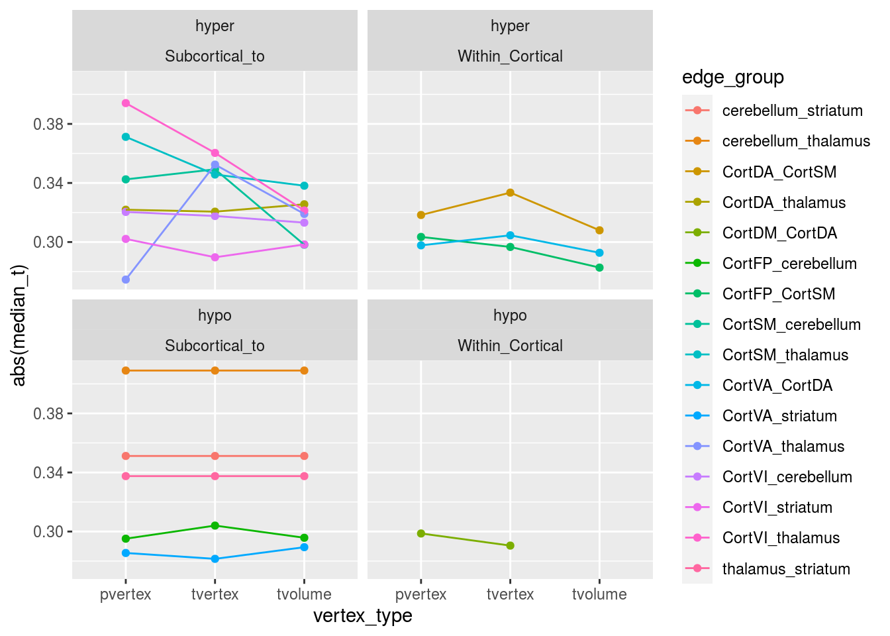
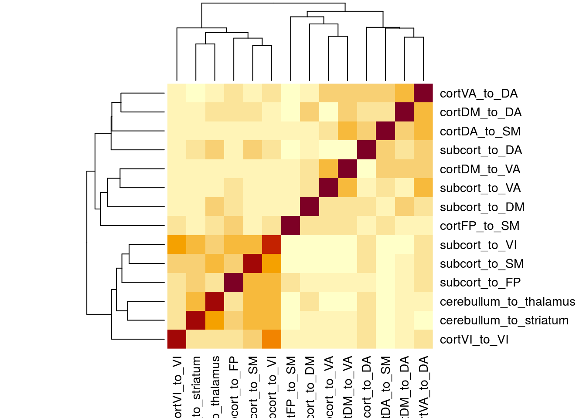
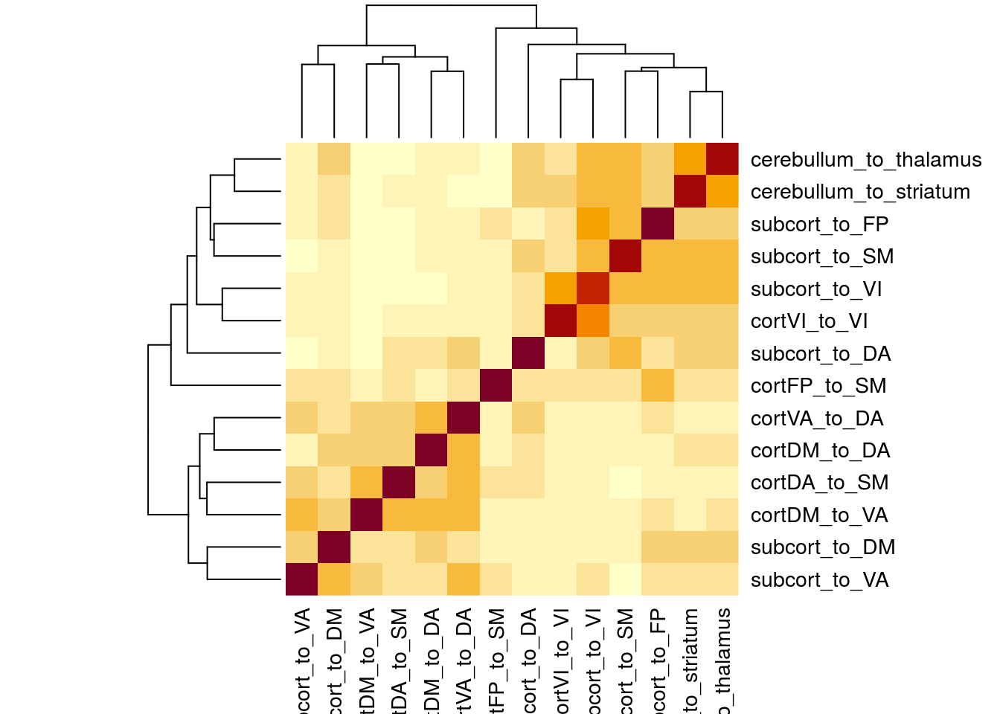
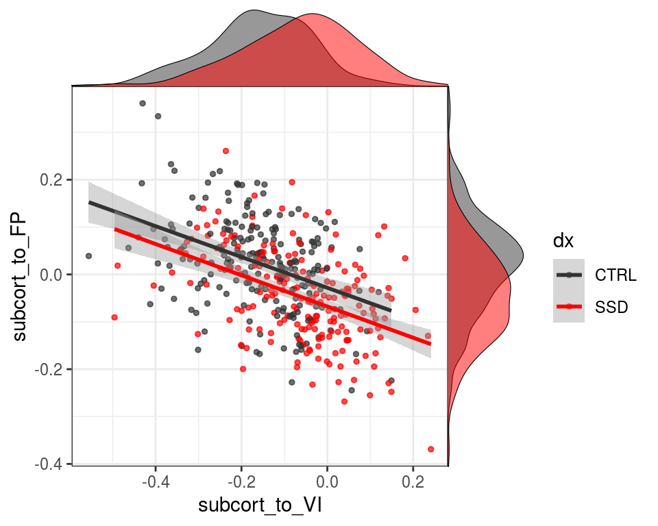
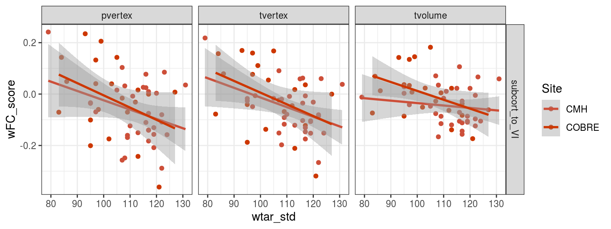
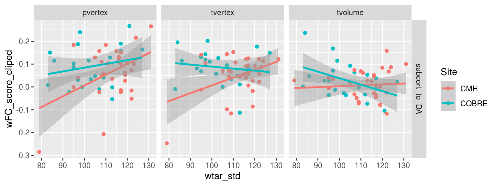
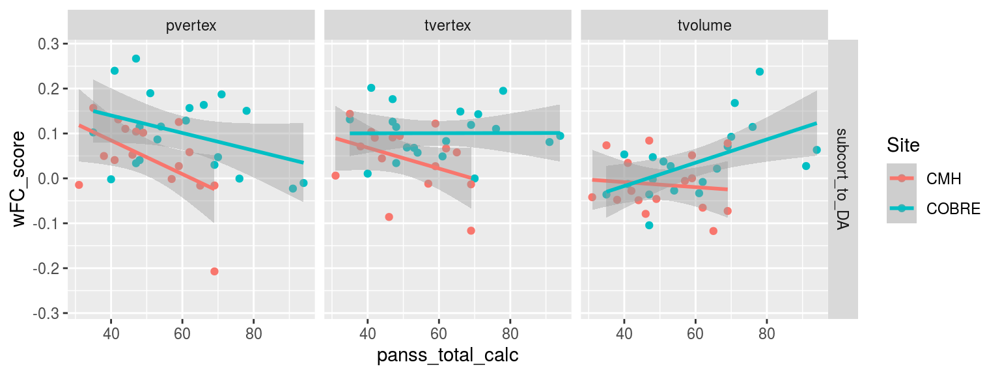
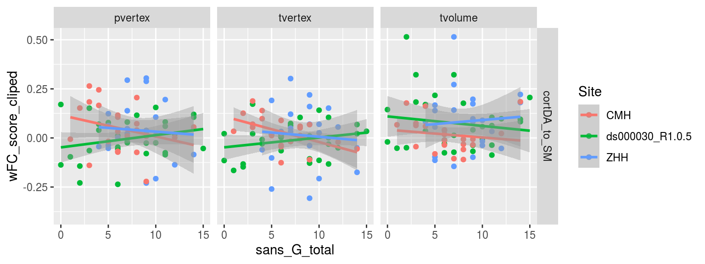

Chapter 10 calculate weighted subject scores by chopping up the matrix
define_hypohyper_weights <- function(lm_df, cohenD_threshold, node_annotations, edge_guide) {
full_DX_mat <- lm_df %>%
ungroup() %>%
select(to, from, cohenD_DX_tstatdir) %>%
uppertri_df_to_full() %>%
inner_join(node_annotations, by = c("to"="node_name")) %>%
inner_join(node_annotations, by = c("from"="node_name"))
pos_weights <- full_DX_mat %>%
filter(value > cohenD_threshold) %>%
semi_join(edge_grouping_guide, by = c("node_grouping.x" = "to",
"node_grouping.y" = "from")) %>%
unite(edge_group, node_grouping.x, node_grouping.y) %>%
select(edge_group, to, from, value)
neg_weights <- full_DX_mat %>%
filter(value < -cohenD_threshold) %>%
semi_join(edge_grouping_guide, by = c("node_grouping.x" = "to",
"node_grouping.y" = "from")) %>%
unite(edge_group, node_grouping.x, node_grouping.y) %>%
select(edge_group, to, from, value)
all_weights <- bind_rows(hyper = pos_weights,
hypo = neg_weights,
.id = "effect_direction")
return(all_weights)
}
define_vertex_hypohyper_weights <- function(lm_df, v_type, cohenD_threshold) {
groupwise_weights <- lm_df %>%
filter(term == "DXSSD",
vertex_type == v_type) %>%
ungroup() %>%
define_hypohyper_weights(., cohenD_threshold,
node_annotations = node_annotations1,
edge_guide = edge_guide)
return(groupwise_weights)
}size_threshold = 8
cohenD_threshold = 0.26
groupwise_weights <- tibble(vertex_type = c("pvertex", "tvertex", "tvolume")) %>%
mutate(result = map(vertex_type,
~ define_vertex_hypohyper_weights(DX_lm_model_DXcohenD,
.x,
cohenD_threshold))) %>%
unnest(cols = c(result))
groupwise_weights_table <- groupwise_weights %>%
count(vertex_type, effect_direction, edge_group) %>%
spread(effect_direction, n, fill = 0) %>%
group_by(edge_group) %>%
mutate(hyperhypo_diff = (hyper - hypo)/(hyper + hypo),
use_hypo = max(hyperhypo_diff) < 0.1 & min(hypo) > size_threshold,
use_hyper = min(hyperhypo_diff) > -0.1 & min(hyper) > size_threshold,
num = use_hypo + use_hyper) %>%
select(num, use_hypo, use_hyper, everything()) %>%
arrange(num, edge_group, vertex_type)
# ungroup() %>%
# select(vertex_type, edge_group, hyperhypo_diff, max_size) %>%
# gather(tmp_col, tmp_vals, hyperhypo_diff, max_size) %>%
# unite(vertex_meas, tmp_col, vertex_type) %>%
# spread(vertex_meas, tmp_vals) %>%
# arrange(-abs(hyperhypo_diff_tvolume))
groupwise_weights_table## # A tibble: 118 x 8
## # Groups: edge_group [42]
## num use_hypo use_hyper vertex_type edge_group hyper hypo hyperhypo_diff
## <int> <lgl> <lgl> <chr> <chr> <dbl> <dbl> <dbl>
## 1 0 FALSE FALSE pvertex CortDA_cereb… 2 4 -0.333
## 2 0 FALSE FALSE tvertex CortDA_cereb… 4 1 0.6
## 3 0 FALSE FALSE tvolume CortDA_cereb… 2 2 0
## 4 0 FALSE FALSE tvolume CortDA_CortDA 2 0 1
## 5 0 FALSE FALSE pvertex CortDA_CortVI 1 0 1
## 6 0 FALSE FALSE tvertex CortDA_CortVI 0 1 -1
## 7 0 FALSE FALSE tvolume CortDA_CortVI 1 1 0
## 8 0 FALSE FALSE tvolume CortDA_stria… 6 0 1
## 9 0 FALSE FALSE pvertex CortDM_cereb… 14 5 0.474
## 10 0 FALSE FALSE tvertex CortDM_cereb… 4 10 -0.429
## # … with 108 more rowsedge_groups_to_use <- groupwise_weights_table %>%
ungroup() %>%
select(use_hypo, use_hyper, edge_group) %>%
distinct() %>%
filter(use_hypo | use_hyper)
edge_groups_to_use## # A tibble: 16 x 3
## use_hypo use_hyper edge_group
## <lgl> <lgl> <chr>
## 1 TRUE FALSE cerebellum_striatum
## 2 TRUE FALSE cerebellum_thalamus
## 3 FALSE TRUE CortDA_CortSM
## 4 FALSE TRUE CortDA_thalamus
## 5 TRUE FALSE CortDM_CortDA
## 6 TRUE FALSE CortFP_cerebellum
## 7 FALSE TRUE CortFP_CortSM
## 8 FALSE TRUE CortSM_cerebellum
## 9 FALSE TRUE CortSM_thalamus
## 10 FALSE TRUE CortVA_CortDA
## 11 TRUE FALSE CortVA_striatum
## 12 FALSE TRUE CortVA_thalamus
## 13 FALSE TRUE CortVI_cerebellum
## 14 FALSE TRUE CortVI_striatum
## 15 FALSE TRUE CortVI_thalamus
## 16 TRUE FALSE thalamus_striatumhyper_edgegroups <- edge_groups_to_use %>% filter(use_hyper) %>% pull(edge_group)
hypo_edgegroups <- edge_groups_to_use %>% filter(use_hypo) %>% pull(edge_group)
groupwise_weights_hyper <- groupwise_weights %>%
filter(edge_group %in% hyper_edgegroups,
effect_direction == "hyper")
groupwise_weights_hypo <- groupwise_weights %>%
filter(edge_group %in% hypo_edgegroups,
effect_direction == "hypo")
groupwise_weights_both <- bind_rows(
groupwise_weights_hypo,
groupwise_weights_hyper
) %>%
rename(edge_FC_weight = value)
groupwise_weights_both %>%
count(vertex_type, effect_direction, edge_group) %>%
ggplot(aes(y = n, x = vertex_type, color = edge_group)) +
geom_point() +
geom_line(aes(group = edge_group)) +
facet_wrap(~effect_direction)
groupwise_weights_both %>%
mutate(node_class = if_else(str_detect(edge_group,'_Cort'),
"Within_Cortical",
"Subcortical_to")) %>%
group_by(vertex_type, effect_direction, edge_group, node_class) %>%
summarise(median_t = median(edge_FC_weight)) %>%
ggplot(aes(y = abs(median_t), x = vertex_type, color = edge_group)) +
geom_point() +
geom_line(aes(group = edge_group)) +
facet_wrap(~effect_direction*node_class)## `summarise()` regrouping output by 'vertex_type', 'effect_direction', 'edge_group' (override with `.groups` argument)
write_csv(groupwise_weights_both, file.path(output_base,
"all_clinicalplusqa_group",
"weighted_subject_FC_weigths",
'SSD4cohorts_DXweighted_moregroups_subject_weights.csv'))all_subject_FC_weights_by_vertex <- function(results_data, edge_weights, vtype) {
result <- results_data %>%
ungroup() %>%
filter(vertex_type == vtype) %>%
select(subject, dataset, to, from, weight) %>%
calc_subjects_wFC_score(edge_weights %>% filter(vertex_type == vtype))
return(result)
}
all_subject_FC_weights <- tibble(vertex_type = c("pvertex", "tvertex", "tvolume")) %>%
mutate(result = map(vertex_type,
~all_subject_FC_weights_by_vertex(results_pheno, groupwise_weights_both, .x))) %>%
unnest(cols = c(result))## `summarise()` regrouping output by 'subject', 'dataset', 'effect_direction' (override with `.groups` argument)
## `summarise()` regrouping output by 'subject', 'dataset', 'effect_direction' (override with `.groups` argument)
## `summarise()` regrouping output by 'subject', 'dataset', 'effect_direction' (override with `.groups` argument)write_csv(all_subject_FC_weights, file.path(output_base,
"all_clinicalplusqa_group",
"weighted_subject_FC_scores",
'SSD4cohorts_DXweighted_edgegroupwise_subject_scores.csv'))FC_gscores_lmfit <- all_subject_FC_weights %>%
inner_join(pheno, by = c("subject", "dataset")) %>%
ungroup() %>%
group_by(effect_direction, edge_group, vertex_type) %>%
do(tidy(lm(wFC_score ~ DX + Age_pt + Sex + fd_mean_pt + Site,.)))
FC_gscores_lmfit %>%
select(effect_direction, edge_group, vertex_type, term, statistic, p.value) %>%
filter(term == "DXSSD") %>%
knitr::kable()| effect_direction | edge_group | vertex_type | term | statistic | p.value |
|---|---|---|---|---|---|
| hyper | CortDA_CortSM | pvertex | DXSSD | 5.845282 | 0.00e+00 |
| hyper | CortDA_CortSM | tvertex | DXSSD | 6.776400 | 0.00e+00 |
| hyper | CortDA_CortSM | tvolume | DXSSD | 5.671978 | 0.00e+00 |
| hyper | CortDA_thalamus | pvertex | DXSSD | 5.196846 | 3.00e-07 |
| hyper | CortDA_thalamus | tvertex | DXSSD | 6.969710 | 0.00e+00 |
| hyper | CortDA_thalamus | tvolume | DXSSD | 6.589500 | 0.00e+00 |
| hyper | CortFP_CortSM | pvertex | DXSSD | 4.828552 | 2.00e-06 |
| hyper | CortFP_CortSM | tvertex | DXSSD | 5.966246 | 0.00e+00 |
| hyper | CortFP_CortSM | tvolume | DXSSD | 5.252345 | 2.00e-07 |
| hyper | CortSM_cerebellum | pvertex | DXSSD | 5.640554 | 0.00e+00 |
| hyper | CortSM_cerebellum | tvertex | DXSSD | 6.534012 | 0.00e+00 |
| hyper | CortSM_cerebellum | tvolume | DXSSD | 5.840569 | 0.00e+00 |
| hyper | CortSM_thalamus | pvertex | DXSSD | 5.884949 | 0.00e+00 |
| hyper | CortSM_thalamus | tvertex | DXSSD | 6.571101 | 0.00e+00 |
| hyper | CortSM_thalamus | tvolume | DXSSD | 6.559769 | 0.00e+00 |
| hyper | CortVA_CortDA | pvertex | DXSSD | 5.557345 | 1.00e-07 |
| hyper | CortVA_CortDA | tvertex | DXSSD | 7.656908 | 0.00e+00 |
| hyper | CortVA_CortDA | tvolume | DXSSD | 6.425023 | 0.00e+00 |
| hyper | CortVA_thalamus | pvertex | DXSSD | 4.221236 | 3.01e-05 |
| hyper | CortVA_thalamus | tvertex | DXSSD | 6.121716 | 0.00e+00 |
| hyper | CortVA_thalamus | tvolume | DXSSD | 7.025053 | 0.00e+00 |
| hyper | CortVI_cerebellum | pvertex | DXSSD | 5.260644 | 2.00e-07 |
| hyper | CortVI_cerebellum | tvertex | DXSSD | 5.600676 | 0.00e+00 |
| hyper | CortVI_cerebellum | tvolume | DXSSD | 4.854027 | 1.70e-06 |
| hyper | CortVI_striatum | pvertex | DXSSD | 4.662483 | 4.30e-06 |
| hyper | CortVI_striatum | tvertex | DXSSD | 4.798883 | 2.30e-06 |
| hyper | CortVI_striatum | tvolume | DXSSD | 4.632696 | 4.90e-06 |
| hyper | CortVI_thalamus | pvertex | DXSSD | 6.659482 | 0.00e+00 |
| hyper | CortVI_thalamus | tvertex | DXSSD | 7.237281 | 0.00e+00 |
| hyper | CortVI_thalamus | tvolume | DXSSD | 6.049776 | 0.00e+00 |
| hypo | cerebellum_striatum | pvertex | DXSSD | -6.215017 | 0.00e+00 |
| hypo | cerebellum_striatum | tvertex | DXSSD | -6.215017 | 0.00e+00 |
| hypo | cerebellum_striatum | tvolume | DXSSD | -6.215017 | 0.00e+00 |
| hypo | cerebellum_thalamus | pvertex | DXSSD | -8.142185 | 0.00e+00 |
| hypo | cerebellum_thalamus | tvertex | DXSSD | -8.142185 | 0.00e+00 |
| hypo | cerebellum_thalamus | tvolume | DXSSD | -8.142185 | 0.00e+00 |
| hypo | CortDM_CortDA | pvertex | DXSSD | -5.750990 | 0.00e+00 |
| hypo | CortDM_CortDA | tvertex | DXSSD | -6.724222 | 0.00e+00 |
| hypo | CortFP_cerebellum | pvertex | DXSSD | -5.734453 | 0.00e+00 |
| hypo | CortFP_cerebellum | tvertex | DXSSD | -6.925592 | 0.00e+00 |
| hypo | CortFP_cerebellum | tvolume | DXSSD | -5.936426 | 0.00e+00 |
| hypo | CortVA_striatum | pvertex | DXSSD | -4.234918 | 2.84e-05 |
| hypo | CortVA_striatum | tvertex | DXSSD | -4.595880 | 5.80e-06 |
| hypo | CortVA_striatum | tvolume | DXSSD | -4.558391 | 6.90e-06 |
| hypo | thalamus_striatum | pvertex | DXSSD | -5.839593 | 0.00e+00 |
| hypo | thalamus_striatum | tvertex | DXSSD | -5.839593 | 0.00e+00 |
| hypo | thalamus_striatum | tvolume | DXSSD | -5.839593 | 0.00e+00 |
FC_gscores_lmfit %>%
mutate(node_class = if_else(str_detect(edge_group,'_Cort'),
"Within_Cortical",
"Subcortical_to")) %>%
group_by(vertex_type, effect_direction, edge_group, node_class) %>%
filter(term == "DXSSD") %>%
ggplot(aes(y = abs(statistic), x = rev(vertex_type), color = edge_group)) +
geom_point() +
geom_line(aes(group = edge_group)) +
facet_wrap(~effect_direction*node_class)FC_gscores_lmfitbySite <- all_subject_FC_weights %>%
inner_join(pheno, by = c("subject", "dataset")) %>%
ungroup() %>%
group_by(effect_direction, edge_group, vertex_type, Site) %>%
do(tidy(lm(wFC_score ~ DX + Age_pt + Sex + fd_mean_pt,.)))
FC_gscores_lmfitbySite %>%
select(effect_direction, edge_group, Site, vertex_type, term, statistic, p.value) %>%
filter(term == "DXSSD") %>%
knitr::kable()| effect_direction | edge_group | Site | vertex_type | term | statistic | p.value |
|---|---|---|---|---|---|---|
| hyper | CortDA_CortSM | CMH | pvertex | DXSSD | 3.4344896 | 0.0008567 |
| hyper | CortDA_CortSM | COBRE | pvertex | DXSSD | 1.5512773 | 0.1279991 |
| hyper | CortDA_CortSM | ds000030 | pvertex | DXSSD | 0.8355214 | 0.4069129 |
| hyper | CortDA_CortSM | ZHH | pvertex | DXSSD | 4.9413579 | 0.0000018 |
| hyper | CortDA_CortSM | CMH | tvertex | DXSSD | 4.0828814 | 0.0000881 |
| hyper | CortDA_CortSM | COBRE | tvertex | DXSSD | 0.5466634 | 0.5873718 |
| hyper | CortDA_CortSM | ds000030 | tvertex | DXSSD | 1.1560392 | 0.2524877 |
| hyper | CortDA_CortSM | ZHH | tvertex | DXSSD | 6.0846098 | 0.0000000 |
| hyper | CortDA_CortSM | CMH | tvolume | DXSSD | 2.0362326 | 0.0442933 |
| hyper | CortDA_CortSM | COBRE | tvolume | DXSSD | 1.1798602 | 0.2443957 |
| hyper | CortDA_CortSM | ds000030 | tvolume | DXSSD | 1.8918418 | 0.0635959 |
| hyper | CortDA_CortSM | ZHH | tvolume | DXSSD | 4.7461613 | 0.0000042 |
| hyper | CortDA_thalamus | CMH | pvertex | DXSSD | 3.3563766 | 0.0011070 |
| hyper | CortDA_thalamus | COBRE | pvertex | DXSSD | 1.5344736 | 0.1320732 |
| hyper | CortDA_thalamus | ds000030 | pvertex | DXSSD | 1.3263653 | 0.1900088 |
| hyper | CortDA_thalamus | ZHH | pvertex | DXSSD | 3.2899980 | 0.0012030 |
| hyper | CortDA_thalamus | CMH | tvertex | DXSSD | 3.5460097 | 0.0005901 |
| hyper | CortDA_thalamus | COBRE | tvertex | DXSSD | 2.9370505 | 0.0052552 |
| hyper | CortDA_thalamus | ds000030 | tvertex | DXSSD | 1.8103877 | 0.0755076 |
| hyper | CortDA_thalamus | ZHH | tvertex | DXSSD | 4.5593559 | 0.0000094 |
| hyper | CortDA_thalamus | CMH | tvolume | DXSSD | 4.5482130 | 0.0000148 |
| hyper | CortDA_thalamus | COBRE | tvolume | DXSSD | 2.9873379 | 0.0045879 |
| hyper | CortDA_thalamus | ds000030 | tvolume | DXSSD | 2.1713130 | 0.0340847 |
| hyper | CortDA_thalamus | ZHH | tvolume | DXSSD | 3.4018269 | 0.0008229 |
| hyper | CortFP_CortSM | CMH | pvertex | DXSSD | 3.3184448 | 0.0012520 |
| hyper | CortFP_CortSM | COBRE | pvertex | DXSSD | 2.1281709 | 0.0389612 |
| hyper | CortFP_CortSM | ds000030 | pvertex | DXSSD | 1.3250661 | 0.1904366 |
| hyper | CortFP_CortSM | ZHH | pvertex | DXSSD | 3.2848092 | 0.0012241 |
| hyper | CortFP_CortSM | CMH | tvertex | DXSSD | 3.0989110 | 0.0025043 |
| hyper | CortFP_CortSM | COBRE | tvertex | DXSSD | 2.5247079 | 0.0152600 |
| hyper | CortFP_CortSM | ds000030 | tvertex | DXSSD | 2.1271389 | 0.0377484 |
| hyper | CortFP_CortSM | ZHH | tvertex | DXSSD | 3.9391567 | 0.0001164 |
| hyper | CortFP_CortSM | CMH | tvolume | DXSSD | 2.5880489 | 0.0110456 |
| hyper | CortFP_CortSM | COBRE | tvolume | DXSSD | 1.1398047 | 0.2605346 |
| hyper | CortFP_CortSM | ds000030 | tvolume | DXSSD | 3.4509512 | 0.0010587 |
| hyper | CortFP_CortSM | ZHH | tvolume | DXSSD | 3.3432662 | 0.0010052 |
| hyper | CortSM_cerebellum | CMH | pvertex | DXSSD | 2.8530052 | 0.0052353 |
| hyper | CortSM_cerebellum | COBRE | pvertex | DXSSD | 2.6343940 | 0.0115915 |
| hyper | CortSM_cerebellum | ds000030 | pvertex | DXSSD | 2.1377744 | 0.0368362 |
| hyper | CortSM_cerebellum | ZHH | pvertex | DXSSD | 3.5767739 | 0.0004457 |
| hyper | CortSM_cerebellum | CMH | tvertex | DXSSD | 3.0642189 | 0.0027859 |
| hyper | CortSM_cerebellum | COBRE | tvertex | DXSSD | 3.5177224 | 0.0010240 |
| hyper | CortSM_cerebellum | ds000030 | tvertex | DXSSD | 2.7013132 | 0.0090799 |
| hyper | CortSM_cerebellum | ZHH | tvertex | DXSSD | 3.9495271 | 0.0001118 |
| hyper | CortSM_cerebellum | CMH | tvolume | DXSSD | 2.7271361 | 0.0075112 |
| hyper | CortSM_cerebellum | COBRE | tvolume | DXSSD | 2.2549213 | 0.0291650 |
| hyper | CortSM_cerebellum | ds000030 | tvolume | DXSSD | 2.4511537 | 0.0173297 |
| hyper | CortSM_cerebellum | ZHH | tvolume | DXSSD | 4.2348927 | 0.0000363 |
| hyper | CortSM_thalamus | CMH | pvertex | DXSSD | 3.2647429 | 0.0014878 |
| hyper | CortSM_thalamus | COBRE | pvertex | DXSSD | 4.0880853 | 0.0001818 |
| hyper | CortSM_thalamus | ds000030 | pvertex | DXSSD | 2.3518344 | 0.0221596 |
| hyper | CortSM_thalamus | ZHH | pvertex | DXSSD | 2.7078940 | 0.0074167 |
| hyper | CortSM_thalamus | CMH | tvertex | DXSSD | 3.8683176 | 0.0001923 |
| hyper | CortSM_thalamus | COBRE | tvertex | DXSSD | 5.0883117 | 0.0000072 |
| hyper | CortSM_thalamus | ds000030 | tvertex | DXSSD | 2.7376128 | 0.0082412 |
| hyper | CortSM_thalamus | ZHH | tvertex | DXSSD | 2.9532402 | 0.0035596 |
| hyper | CortSM_thalamus | CMH | tvolume | DXSSD | 3.8441078 | 0.0002096 |
| hyper | CortSM_thalamus | COBRE | tvolume | DXSSD | 3.4946287 | 0.0010957 |
| hyper | CortSM_thalamus | ds000030 | tvolume | DXSSD | 3.3985227 | 0.0012420 |
| hyper | CortSM_thalamus | ZHH | tvolume | DXSSD | 3.1167000 | 0.0021258 |
| hyper | CortVA_CortDA | CMH | pvertex | DXSSD | 1.2350005 | 0.2196401 |
| hyper | CortVA_CortDA | COBRE | pvertex | DXSSD | 1.4682423 | 0.1491515 |
| hyper | CortVA_CortDA | ds000030 | pvertex | DXSSD | 4.6806422 | 0.0000181 |
| hyper | CortVA_CortDA | ZHH | pvertex | DXSSD | 4.7349298 | 0.0000044 |
| hyper | CortVA_CortDA | CMH | tvertex | DXSSD | 2.4541491 | 0.0157989 |
| hyper | CortVA_CortDA | COBRE | tvertex | DXSSD | 1.7526491 | 0.0866283 |
| hyper | CortVA_CortDA | ds000030 | tvertex | DXSSD | 2.6914350 | 0.0093213 |
| hyper | CortVA_CortDA | ZHH | tvertex | DXSSD | 6.7740919 | 0.0000000 |
| hyper | CortVA_CortDA | CMH | tvolume | DXSSD | 1.8739505 | 0.0637715 |
| hyper | CortVA_CortDA | COBRE | tvolume | DXSSD | 1.4976249 | 0.1413709 |
| hyper | CortVA_CortDA | ds000030 | tvolume | DXSSD | 2.0857786 | 0.0414860 |
| hyper | CortVA_CortDA | ZHH | tvolume | DXSSD | 5.6883141 | 0.0000001 |
| hyper | CortVA_thalamus | CMH | pvertex | DXSSD | 2.3601089 | 0.0201533 |
| hyper | CortVA_thalamus | COBRE | pvertex | DXSSD | 0.6577569 | 0.5141210 |
| hyper | CortVA_thalamus | ds000030 | pvertex | DXSSD | 1.9176334 | 0.0601731 |
| hyper | CortVA_thalamus | ZHH | pvertex | DXSSD | 3.3143369 | 0.0011085 |
| hyper | CortVA_thalamus | CMH | tvertex | DXSSD | 3.1683196 | 0.0020184 |
| hyper | CortVA_thalamus | COBRE | tvertex | DXSSD | 1.3026996 | 0.1994545 |
| hyper | CortVA_thalamus | ds000030 | tvertex | DXSSD | 1.3776201 | 0.1737058 |
| hyper | CortVA_thalamus | ZHH | tvertex | DXSSD | 4.9695406 | 0.0000015 |
| hyper | CortVA_thalamus | CMH | tvolume | DXSSD | 2.6689238 | 0.0088419 |
| hyper | CortVA_thalamus | COBRE | tvolume | DXSSD | 2.6159512 | 0.0121455 |
| hyper | CortVA_thalamus | ds000030 | tvolume | DXSSD | 2.9280756 | 0.0048944 |
| hyper | CortVA_thalamus | ZHH | tvolume | DXSSD | 5.1325790 | 0.0000007 |
| hyper | CortVI_cerebellum | CMH | pvertex | DXSSD | 2.5059463 | 0.0137777 |
| hyper | CortVI_cerebellum | COBRE | pvertex | DXSSD | 2.2640232 | 0.0285542 |
| hyper | CortVI_cerebellum | ds000030 | pvertex | DXSSD | 2.2382208 | 0.0291293 |
| hyper | CortVI_cerebellum | ZHH | pvertex | DXSSD | 3.3906721 | 0.0008551 |
| hyper | CortVI_cerebellum | CMH | tvertex | DXSSD | 3.0193319 | 0.0031939 |
| hyper | CortVI_cerebellum | COBRE | tvertex | DXSSD | 3.2432960 | 0.0022578 |
| hyper | CortVI_cerebellum | ds000030 | tvertex | DXSSD | 1.1326796 | 0.2620910 |
| hyper | CortVI_cerebellum | ZHH | tvertex | DXSSD | 3.4705313 | 0.0006486 |
| hyper | CortVI_cerebellum | CMH | tvolume | DXSSD | 2.4872823 | 0.0144776 |
| hyper | CortVI_cerebellum | COBRE | tvolume | DXSSD | 2.8430943 | 0.0067510 |
| hyper | CortVI_cerebellum | ds000030 | tvolume | DXSSD | 0.9611283 | 0.3405472 |
| hyper | CortVI_cerebellum | ZHH | tvolume | DXSSD | 3.2230787 | 0.0015029 |
| hyper | CortVI_striatum | CMH | pvertex | DXSSD | 2.6426214 | 0.0095105 |
| hyper | CortVI_striatum | COBRE | pvertex | DXSSD | 2.1283515 | 0.0389454 |
| hyper | CortVI_striatum | ds000030 | pvertex | DXSSD | 0.0498187 | 0.9604410 |
| hyper | CortVI_striatum | ZHH | pvertex | DXSSD | 3.4868579 | 0.0006126 |
| hyper | CortVI_striatum | CMH | tvertex | DXSSD | 3.2838928 | 0.0013993 |
| hyper | CortVI_striatum | COBRE | tvertex | DXSSD | 1.5306756 | 0.1330083 |
| hyper | CortVI_striatum | ds000030 | tvertex | DXSSD | -0.4477015 | 0.6560656 |
| hyper | CortVI_striatum | ZHH | tvertex | DXSSD | 3.7865589 | 0.0002073 |
| hyper | CortVI_striatum | CMH | tvolume | DXSSD | 2.7896505 | 0.0062873 |
| hyper | CortVI_striatum | COBRE | tvolume | DXSSD | 2.5025433 | 0.0161190 |
| hyper | CortVI_striatum | ds000030 | tvolume | DXSSD | 0.1800368 | 0.8577622 |
| hyper | CortVI_striatum | ZHH | tvolume | DXSSD | 3.4075568 | 0.0008069 |
| hyper | CortVI_thalamus | CMH | pvertex | DXSSD | 2.6853600 | 0.0084461 |
| hyper | CortVI_thalamus | COBRE | pvertex | DXSSD | 3.6812734 | 0.0006306 |
| hyper | CortVI_thalamus | ds000030 | pvertex | DXSSD | 2.2409145 | 0.0289439 |
| hyper | CortVI_thalamus | ZHH | pvertex | DXSSD | 4.2162657 | 0.0000391 |
| hyper | CortVI_thalamus | CMH | tvertex | DXSSD | 3.6256455 | 0.0004500 |
| hyper | CortVI_thalamus | COBRE | tvertex | DXSSD | 3.4204297 | 0.0013599 |
| hyper | CortVI_thalamus | ds000030 | tvertex | DXSSD | 1.9176961 | 0.0601650 |
| hyper | CortVI_thalamus | ZHH | tvertex | DXSSD | 4.5426685 | 0.0000101 |
| hyper | CortVI_thalamus | CMH | tvolume | DXSSD | 3.1809944 | 0.0019398 |
| hyper | CortVI_thalamus | COBRE | tvolume | DXSSD | 3.3324263 | 0.0017522 |
| hyper | CortVI_thalamus | ds000030 | tvolume | DXSSD | 1.8220013 | 0.0737026 |
| hyper | CortVI_thalamus | ZHH | tvolume | DXSSD | 3.5645743 | 0.0004656 |
| hypo | cerebellum_striatum | CMH | pvertex | DXSSD | -3.5999616 | 0.0004913 |
| hypo | cerebellum_striatum | COBRE | pvertex | DXSSD | -1.8077813 | 0.0774795 |
| hypo | cerebellum_striatum | ds000030 | pvertex | DXSSD | -2.9621033 | 0.0044498 |
| hypo | cerebellum_striatum | ZHH | pvertex | DXSSD | -3.3963618 | 0.0008385 |
| hypo | cerebellum_striatum | CMH | tvertex | DXSSD | -3.5999616 | 0.0004913 |
| hypo | cerebellum_striatum | COBRE | tvertex | DXSSD | -1.8077813 | 0.0774795 |
| hypo | cerebellum_striatum | ds000030 | tvertex | DXSSD | -2.9621033 | 0.0044498 |
| hypo | cerebellum_striatum | ZHH | tvertex | DXSSD | -3.3963618 | 0.0008385 |
| hypo | cerebellum_striatum | CMH | tvolume | DXSSD | -3.5999616 | 0.0004913 |
| hypo | cerebellum_striatum | COBRE | tvolume | DXSSD | -1.8077813 | 0.0774795 |
| hypo | cerebellum_striatum | ds000030 | tvolume | DXSSD | -2.9621033 | 0.0044498 |
| hypo | cerebellum_striatum | ZHH | tvolume | DXSSD | -3.3963618 | 0.0008385 |
| hypo | cerebellum_thalamus | CMH | pvertex | DXSSD | -4.6015074 | 0.0000120 |
| hypo | cerebellum_thalamus | COBRE | pvertex | DXSSD | -2.6812577 | 0.0102866 |
| hypo | cerebellum_thalamus | ds000030 | pvertex | DXSSD | -4.7403172 | 0.0000147 |
| hypo | cerebellum_thalamus | ZHH | pvertex | DXSSD | -4.5891934 | 0.0000083 |
| hypo | cerebellum_thalamus | CMH | tvertex | DXSSD | -4.6015074 | 0.0000120 |
| hypo | cerebellum_thalamus | COBRE | tvertex | DXSSD | -2.6812577 | 0.0102866 |
| hypo | cerebellum_thalamus | ds000030 | tvertex | DXSSD | -4.7403172 | 0.0000147 |
| hypo | cerebellum_thalamus | ZHH | tvertex | DXSSD | -4.5891934 | 0.0000083 |
| hypo | cerebellum_thalamus | CMH | tvolume | DXSSD | -4.6015074 | 0.0000120 |
| hypo | cerebellum_thalamus | COBRE | tvolume | DXSSD | -2.6812577 | 0.0102866 |
| hypo | cerebellum_thalamus | ds000030 | tvolume | DXSSD | -4.7403172 | 0.0000147 |
| hypo | cerebellum_thalamus | ZHH | tvolume | DXSSD | -4.5891934 | 0.0000083 |
| hypo | CortDM_CortDA | CMH | pvertex | DXSSD | -2.2385297 | 0.0273380 |
| hypo | CortDM_CortDA | COBRE | pvertex | DXSSD | -1.1462114 | 0.2579032 |
| hypo | CortDM_CortDA | ds000030 | pvertex | DXSSD | -2.5832313 | 0.0123780 |
| hypo | CortDM_CortDA | ZHH | pvertex | DXSSD | -4.4924489 | 0.0000125 |
| hypo | CortDM_CortDA | CMH | tvertex | DXSSD | -3.7948583 | 0.0002497 |
| hypo | CortDM_CortDA | COBRE | tvertex | DXSSD | -1.6071827 | 0.1151678 |
| hypo | CortDM_CortDA | ds000030 | tvertex | DXSSD | -2.8753738 | 0.0056652 |
| hypo | CortDM_CortDA | ZHH | tvertex | DXSSD | -4.1312970 | 0.0000549 |
| hypo | CortFP_cerebellum | CMH | pvertex | DXSSD | -3.0274325 | 0.0031164 |
| hypo | CortFP_cerebellum | COBRE | pvertex | DXSSD | -2.4144515 | 0.0199847 |
| hypo | CortFP_cerebellum | ds000030 | pvertex | DXSSD | -2.2988879 | 0.0251978 |
| hypo | CortFP_cerebellum | ZHH | pvertex | DXSSD | -3.4484459 | 0.0007005 |
| hypo | CortFP_cerebellum | CMH | tvertex | DXSSD | -3.2782075 | 0.0014250 |
| hypo | CortFP_cerebellum | COBRE | tvertex | DXSSD | -1.8266465 | 0.0745419 |
| hypo | CortFP_cerebellum | ds000030 | tvertex | DXSSD | -3.9203669 | 0.0002397 |
| hypo | CortFP_cerebellum | ZHH | tvertex | DXSSD | -4.3649517 | 0.0000213 |
| hypo | CortFP_cerebellum | CMH | tvolume | DXSSD | -3.7529968 | 0.0002893 |
| hypo | CortFP_cerebellum | COBRE | tvolume | DXSSD | -1.0983332 | 0.2780330 |
| hypo | CortFP_cerebellum | ds000030 | tvolume | DXSSD | -2.1921521 | 0.0324673 |
| hypo | CortFP_cerebellum | ZHH | tvolume | DXSSD | -3.9193496 | 0.0001256 |
| hypo | CortVA_striatum | CMH | pvertex | DXSSD | -1.5934447 | 0.1141247 |
| hypo | CortVA_striatum | COBRE | pvertex | DXSSD | -2.5633210 | 0.0138624 |
| hypo | CortVA_striatum | ds000030 | pvertex | DXSSD | -0.5908363 | 0.5569657 |
| hypo | CortVA_striatum | ZHH | pvertex | DXSSD | -3.5838948 | 0.0004345 |
| hypo | CortVA_striatum | CMH | tvertex | DXSSD | -1.8999148 | 0.0602411 |
| hypo | CortVA_striatum | COBRE | tvertex | DXSSD | -1.5178655 | 0.1362013 |
| hypo | CortVA_striatum | ds000030 | tvertex | DXSSD | -0.5884030 | 0.5585863 |
| hypo | CortVA_striatum | ZHH | tvertex | DXSSD | -4.2883953 | 0.0000292 |
| hypo | CortVA_striatum | CMH | tvolume | DXSSD | -2.2259698 | 0.0281950 |
| hypo | CortVA_striatum | COBRE | tvolume | DXSSD | -1.2274397 | 0.2261841 |
| hypo | CortVA_striatum | ds000030 | tvolume | DXSSD | -0.7110836 | 0.4799323 |
| hypo | CortVA_striatum | ZHH | tvolume | DXSSD | -4.0229863 | 0.0000842 |
| hypo | thalamus_striatum | CMH | pvertex | DXSSD | -1.6761060 | 0.0967504 |
| hypo | thalamus_striatum | COBRE | pvertex | DXSSD | -1.7888432 | 0.0805259 |
| hypo | thalamus_striatum | ds000030 | pvertex | DXSSD | -3.8062880 | 0.0003469 |
| hypo | thalamus_striatum | ZHH | pvertex | DXSSD | -4.7618743 | 0.0000039 |
| hypo | thalamus_striatum | CMH | tvertex | DXSSD | -1.6761060 | 0.0967504 |
| hypo | thalamus_striatum | COBRE | tvertex | DXSSD | -1.7888432 | 0.0805259 |
| hypo | thalamus_striatum | ds000030 | tvertex | DXSSD | -3.8062880 | 0.0003469 |
| hypo | thalamus_striatum | ZHH | tvertex | DXSSD | -4.7618743 | 0.0000039 |
| hypo | thalamus_striatum | CMH | tvolume | DXSSD | -1.6761060 | 0.0967504 |
| hypo | thalamus_striatum | COBRE | tvolume | DXSSD | -1.7888432 | 0.0805259 |
| hypo | thalamus_striatum | ds000030 | tvolume | DXSSD | -3.8062880 | 0.0003469 |
| hypo | thalamus_striatum | ZHH | tvolume | DXSSD | -4.7618743 | 0.0000039 |
FC_gscores_lmfitbySite %>%
mutate(node_class = if_else(str_detect(edge_group,'_Cort'),
"Within_Cortical",
"Subcortical_to")) %>%
filter(term == "DXSSD",
node_class == "Subcortical_to") %>%
ggplot(aes(y = abs(statistic), x = rev(vertex_type), color = effect_direction)) +
geom_point() +
geom_line(aes(group = edge_group)) +
facet_wrap(~Site)FC_gscores_lmfitbySite_mFC <- all_subject_FC_weights %>%
inner_join(pheno, by = c("subject", "dataset")) %>%
ungroup() %>%
group_by(effect_direction, edge_group, vertex_type, Site) %>%
do(tidy(lm(mFC_score ~ DX + Age_pt + Sex + fd_mean_pt,.)))
FC_gscores_lmfitbySite_mFC %>%
select(effect_direction, edge_group, Site, vertex_type, term, statistic, p.value) %>%
filter(term == "DXSSD") %>%
knitr::kable()| effect_direction | edge_group | Site | vertex_type | term | statistic | p.value |
|---|---|---|---|---|---|---|
| hyper | CortDA_CortSM | CMH | pvertex | DXSSD | 3.4307831 | 0.0008673 |
| hyper | CortDA_CortSM | COBRE | pvertex | DXSSD | 1.4297202 | 0.1598599 |
| hyper | CortDA_CortSM | ds000030 | pvertex | DXSSD | 0.8898616 | 0.3772807 |
| hyper | CortDA_CortSM | ZHH | pvertex | DXSSD | 4.8705102 | 0.0000024 |
| hyper | CortDA_CortSM | CMH | tvertex | DXSSD | 4.0865458 | 0.0000869 |
| hyper | CortDA_CortSM | COBRE | tvertex | DXSSD | 0.4606818 | 0.6472958 |
| hyper | CortDA_CortSM | ds000030 | tvertex | DXSSD | 1.3658362 | 0.1773557 |
| hyper | CortDA_CortSM | ZHH | tvertex | DXSSD | 5.9353567 | 0.0000000 |
| hyper | CortDA_CortSM | CMH | tvolume | DXSSD | 2.1163903 | 0.0367212 |
| hyper | CortDA_CortSM | COBRE | tvolume | DXSSD | 1.1158132 | 0.2705591 |
| hyper | CortDA_CortSM | ds000030 | tvolume | DXSSD | 1.8909728 | 0.0637141 |
| hyper | CortDA_CortSM | ZHH | tvolume | DXSSD | 4.6916826 | 0.0000053 |
| hyper | CortDA_thalamus | CMH | pvertex | DXSSD | 3.2795216 | 0.0014191 |
| hyper | CortDA_thalamus | COBRE | pvertex | DXSSD | 1.5761312 | 0.1221592 |
| hyper | CortDA_thalamus | ds000030 | pvertex | DXSSD | 1.3630007 | 0.1782426 |
| hyper | CortDA_thalamus | ZHH | pvertex | DXSSD | 3.2095767 | 0.0015713 |
| hyper | CortDA_thalamus | CMH | tvertex | DXSSD | 3.4832581 | 0.0007285 |
| hyper | CortDA_thalamus | COBRE | tvertex | DXSSD | 2.9730426 | 0.0047690 |
| hyper | CortDA_thalamus | ds000030 | tvertex | DXSSD | 1.8303839 | 0.0724224 |
| hyper | CortDA_thalamus | ZHH | tvertex | DXSSD | 4.5539688 | 0.0000096 |
| hyper | CortDA_thalamus | CMH | tvolume | DXSSD | 4.4753669 | 0.0000197 |
| hyper | CortDA_thalamus | COBRE | tvolume | DXSSD | 2.9252450 | 0.0054245 |
| hyper | CortDA_thalamus | ds000030 | tvolume | DXSSD | 2.0558319 | 0.0443891 |
| hyper | CortDA_thalamus | ZHH | tvolume | DXSSD | 3.3514208 | 0.0009777 |
| hyper | CortFP_CortSM | CMH | pvertex | DXSSD | 3.2950360 | 0.0013501 |
| hyper | CortFP_CortSM | COBRE | pvertex | DXSSD | 2.1243536 | 0.0392965 |
| hyper | CortFP_CortSM | ds000030 | pvertex | DXSSD | 1.3545793 | 0.1808968 |
| hyper | CortFP_CortSM | ZHH | pvertex | DXSSD | 3.3034184 | 0.0011500 |
| hyper | CortFP_CortSM | CMH | tvertex | DXSSD | 3.0923611 | 0.0025554 |
| hyper | CortFP_CortSM | COBRE | tvertex | DXSSD | 2.4394421 | 0.0188107 |
| hyper | CortFP_CortSM | ds000030 | tvertex | DXSSD | 2.1964282 | 0.0321439 |
| hyper | CortFP_CortSM | ZHH | tvertex | DXSSD | 3.8966111 | 0.0001370 |
| hyper | CortFP_CortSM | CMH | tvolume | DXSSD | 2.5811025 | 0.0112563 |
| hyper | CortFP_CortSM | COBRE | tvolume | DXSSD | 1.0987144 | 0.2778685 |
| hyper | CortFP_CortSM | ds000030 | tvolume | DXSSD | 3.3993770 | 0.0012388 |
| hyper | CortFP_CortSM | ZHH | tvolume | DXSSD | 3.3354669 | 0.0010321 |
| hyper | CortSM_cerebellum | CMH | pvertex | DXSSD | 2.8419054 | 0.0054071 |
| hyper | CortSM_cerebellum | COBRE | pvertex | DXSSD | 2.6414208 | 0.0113866 |
| hyper | CortSM_cerebellum | ds000030 | pvertex | DXSSD | 2.0966782 | 0.0404710 |
| hyper | CortSM_cerebellum | ZHH | pvertex | DXSSD | 3.4324427 | 0.0007404 |
| hyper | CortSM_cerebellum | CMH | tvertex | DXSSD | 3.1435967 | 0.0021804 |
| hyper | CortSM_cerebellum | COBRE | tvertex | DXSSD | 3.5036518 | 0.0010671 |
| hyper | CortSM_cerebellum | ds000030 | tvertex | DXSSD | 2.6616182 | 0.0100861 |
| hyper | CortSM_cerebellum | ZHH | tvertex | DXSSD | 3.8410350 | 0.0001690 |
| hyper | CortSM_cerebellum | CMH | tvolume | DXSSD | 2.7356209 | 0.0073333 |
| hyper | CortSM_cerebellum | COBRE | tvolume | DXSSD | 2.2608830 | 0.0287636 |
| hyper | CortSM_cerebellum | ds000030 | tvolume | DXSSD | 2.4384035 | 0.0178917 |
| hyper | CortSM_cerebellum | ZHH | tvolume | DXSSD | 4.1944266 | 0.0000427 |
| hyper | CortSM_thalamus | CMH | pvertex | DXSSD | 3.2567289 | 0.0015264 |
| hyper | CortSM_thalamus | COBRE | pvertex | DXSSD | 4.0523578 | 0.0002032 |
| hyper | CortSM_thalamus | ds000030 | pvertex | DXSSD | 2.2998461 | 0.0251397 |
| hyper | CortSM_thalamus | ZHH | pvertex | DXSSD | 2.6609259 | 0.0084891 |
| hyper | CortSM_thalamus | CMH | tvertex | DXSSD | 3.7932260 | 0.0002511 |
| hyper | CortSM_thalamus | COBRE | tvertex | DXSSD | 5.0398104 | 0.0000085 |
| hyper | CortSM_thalamus | ds000030 | tvertex | DXSSD | 2.7801334 | 0.0073495 |
| hyper | CortSM_thalamus | ZHH | tvertex | DXSSD | 2.8791553 | 0.0044654 |
| hyper | CortSM_thalamus | CMH | tvolume | DXSSD | 3.8139460 | 0.0002334 |
| hyper | CortSM_thalamus | COBRE | tvolume | DXSSD | 3.5671379 | 0.0008854 |
| hyper | CortSM_thalamus | ds000030 | tvolume | DXSSD | 3.3706408 | 0.0013514 |
| hyper | CortSM_thalamus | ZHH | tvolume | DXSSD | 3.0662577 | 0.0024979 |
| hyper | CortVA_CortDA | CMH | pvertex | DXSSD | 1.1942827 | 0.2351105 |
| hyper | CortVA_CortDA | COBRE | pvertex | DXSSD | 1.4891082 | 0.1435922 |
| hyper | CortVA_CortDA | ds000030 | pvertex | DXSSD | 4.6235019 | 0.0000221 |
| hyper | CortVA_CortDA | ZHH | pvertex | DXSSD | 4.7363092 | 0.0000044 |
| hyper | CortVA_CortDA | CMH | tvertex | DXSSD | 2.4500596 | 0.0159692 |
| hyper | CortVA_CortDA | COBRE | tvertex | DXSSD | 1.6777851 | 0.1004796 |
| hyper | CortVA_CortDA | ds000030 | tvertex | DXSSD | 2.6399326 | 0.0106779 |
| hyper | CortVA_CortDA | ZHH | tvertex | DXSSD | 6.6943833 | 0.0000000 |
| hyper | CortVA_CortDA | CMH | tvolume | DXSSD | 1.8291741 | 0.0702667 |
| hyper | CortVA_CortDA | COBRE | tvolume | DXSSD | 1.4308434 | 0.1595394 |
| hyper | CortVA_CortDA | ds000030 | tvolume | DXSSD | 2.0456072 | 0.0454198 |
| hyper | CortVA_CortDA | ZHH | tvolume | DXSSD | 5.6784223 | 0.0000001 |
| hyper | CortVA_thalamus | CMH | pvertex | DXSSD | 2.3485462 | 0.0207562 |
| hyper | CortVA_thalamus | COBRE | pvertex | DXSSD | 0.6636740 | 0.5103617 |
| hyper | CortVA_thalamus | ds000030 | pvertex | DXSSD | 1.8543685 | 0.0688623 |
| hyper | CortVA_thalamus | ZHH | pvertex | DXSSD | 3.2957164 | 0.0011801 |
| hyper | CortVA_thalamus | CMH | tvertex | DXSSD | 3.1460918 | 0.0021636 |
| hyper | CortVA_thalamus | COBRE | tvertex | DXSSD | 1.2630874 | 0.2132102 |
| hyper | CortVA_thalamus | ds000030 | tvertex | DXSSD | 1.3294243 | 0.1890044 |
| hyper | CortVA_thalamus | ZHH | tvertex | DXSSD | 4.9802654 | 0.0000015 |
| hyper | CortVA_thalamus | CMH | tvolume | DXSSD | 2.5225142 | 0.0131820 |
| hyper | CortVA_thalamus | COBRE | tvolume | DXSSD | 2.3386630 | 0.0239600 |
| hyper | CortVA_thalamus | ds000030 | tvolume | DXSSD | 2.6567961 | 0.0102151 |
| hyper | CortVA_thalamus | ZHH | tvolume | DXSSD | 5.0876035 | 0.0000009 |
| hyper | CortVI_cerebellum | CMH | pvertex | DXSSD | 2.4981919 | 0.0140648 |
| hyper | CortVI_cerebellum | COBRE | pvertex | DXSSD | 2.1699284 | 0.0354538 |
| hyper | CortVI_cerebellum | ds000030 | pvertex | DXSSD | 2.1798312 | 0.0334152 |
| hyper | CortVI_cerebellum | ZHH | pvertex | DXSSD | 3.3174170 | 0.0010970 |
| hyper | CortVI_cerebellum | CMH | tvertex | DXSSD | 3.0308620 | 0.0030841 |
| hyper | CortVI_cerebellum | COBRE | tvertex | DXSSD | 3.1381458 | 0.0030319 |
| hyper | CortVI_cerebellum | ds000030 | tvertex | DXSSD | 1.1098774 | 0.2717123 |
| hyper | CortVI_cerebellum | ZHH | tvertex | DXSSD | 3.4115696 | 0.0007958 |
| hyper | CortVI_cerebellum | CMH | tvolume | DXSSD | 2.4663823 | 0.0152990 |
| hyper | CortVI_cerebellum | COBRE | tvolume | DXSSD | 2.8672746 | 0.0063321 |
| hyper | CortVI_cerebellum | ds000030 | tvolume | DXSSD | 0.9070202 | 0.3682147 |
| hyper | CortVI_cerebellum | ZHH | tvolume | DXSSD | 3.2739764 | 0.0012693 |
| hyper | CortVI_striatum | CMH | pvertex | DXSSD | 2.5667714 | 0.0117023 |
| hyper | CortVI_striatum | COBRE | pvertex | DXSSD | 2.1634478 | 0.0359792 |
| hyper | CortVI_striatum | ds000030 | pvertex | DXSSD | 0.0924687 | 0.9266499 |
| hyper | CortVI_striatum | ZHH | pvertex | DXSSD | 3.4364916 | 0.0007301 |
| hyper | CortVI_striatum | CMH | tvertex | DXSSD | 3.2722167 | 0.0014527 |
| hyper | CortVI_striatum | COBRE | tvertex | DXSSD | 1.5308306 | 0.1329700 |
| hyper | CortVI_striatum | ds000030 | tvertex | DXSSD | -0.4409396 | 0.6609247 |
| hyper | CortVI_striatum | ZHH | tvertex | DXSSD | 3.7933874 | 0.0002021 |
| hyper | CortVI_striatum | CMH | tvolume | DXSSD | 2.7862641 | 0.0063486 |
| hyper | CortVI_striatum | COBRE | tvolume | DXSSD | 2.4982614 | 0.0162900 |
| hyper | CortVI_striatum | ds000030 | tvolume | DXSSD | 0.1752642 | 0.8614931 |
| hyper | CortVI_striatum | ZHH | tvolume | DXSSD | 3.4117737 | 0.0007952 |
| hyper | CortVI_thalamus | CMH | pvertex | DXSSD | 2.6740456 | 0.0087168 |
| hyper | CortVI_thalamus | COBRE | pvertex | DXSSD | 3.6308895 | 0.0007329 |
| hyper | CortVI_thalamus | ds000030 | pvertex | DXSSD | 2.0990152 | 0.0402563 |
| hyper | CortVI_thalamus | ZHH | pvertex | DXSSD | 4.0590252 | 0.0000731 |
| hyper | CortVI_thalamus | CMH | tvertex | DXSSD | 3.6254324 | 0.0004503 |
| hyper | CortVI_thalamus | COBRE | tvertex | DXSSD | 3.3566622 | 0.0016346 |
| hyper | CortVI_thalamus | ds000030 | tvertex | DXSSD | 1.7281902 | 0.0893685 |
| hyper | CortVI_thalamus | ZHH | tvertex | DXSSD | 4.4057593 | 0.0000180 |
| hyper | CortVI_thalamus | CMH | tvolume | DXSSD | 3.1768236 | 0.0019654 |
| hyper | CortVI_thalamus | COBRE | tvolume | DXSSD | 3.3028490 | 0.0019067 |
| hyper | CortVI_thalamus | ds000030 | tvolume | DXSSD | 1.7634136 | 0.0831903 |
| hyper | CortVI_thalamus | ZHH | tvolume | DXSSD | 3.4954138 | 0.0005945 |
| hypo | cerebellum_striatum | CMH | pvertex | DXSSD | -3.5490765 | 0.0005840 |
| hypo | cerebellum_striatum | COBRE | pvertex | DXSSD | -1.7904138 | 0.0802695 |
| hypo | cerebellum_striatum | ds000030 | pvertex | DXSSD | -3.0064730 | 0.0039263 |
| hypo | cerebellum_striatum | ZHH | pvertex | DXSSD | -3.3182648 | 0.0010939 |
| hypo | cerebellum_striatum | CMH | tvertex | DXSSD | -3.5490765 | 0.0005840 |
| hypo | cerebellum_striatum | COBRE | tvertex | DXSSD | -1.7904138 | 0.0802695 |
| hypo | cerebellum_striatum | ds000030 | tvertex | DXSSD | -3.0064730 | 0.0039263 |
| hypo | cerebellum_striatum | ZHH | tvertex | DXSSD | -3.3182648 | 0.0010939 |
| hypo | cerebellum_striatum | CMH | tvolume | DXSSD | -3.5490765 | 0.0005840 |
| hypo | cerebellum_striatum | COBRE | tvolume | DXSSD | -1.7904138 | 0.0802695 |
| hypo | cerebellum_striatum | ds000030 | tvolume | DXSSD | -3.0064730 | 0.0039263 |
| hypo | cerebellum_striatum | ZHH | tvolume | DXSSD | -3.3182648 | 0.0010939 |
| hypo | cerebellum_thalamus | CMH | pvertex | DXSSD | -4.4808819 | 0.0000193 |
| hypo | cerebellum_thalamus | COBRE | pvertex | DXSSD | -2.6415968 | 0.0113815 |
| hypo | cerebellum_thalamus | ds000030 | pvertex | DXSSD | -4.7561742 | 0.0000139 |
| hypo | cerebellum_thalamus | ZHH | pvertex | DXSSD | -4.3983000 | 0.0000185 |
| hypo | cerebellum_thalamus | CMH | tvertex | DXSSD | -4.4808819 | 0.0000193 |
| hypo | cerebellum_thalamus | COBRE | tvertex | DXSSD | -2.6415968 | 0.0113815 |
| hypo | cerebellum_thalamus | ds000030 | tvertex | DXSSD | -4.7561742 | 0.0000139 |
| hypo | cerebellum_thalamus | ZHH | tvertex | DXSSD | -4.3983000 | 0.0000185 |
| hypo | cerebellum_thalamus | CMH | tvolume | DXSSD | -4.4808819 | 0.0000193 |
| hypo | cerebellum_thalamus | COBRE | tvolume | DXSSD | -2.6415968 | 0.0113815 |
| hypo | cerebellum_thalamus | ds000030 | tvolume | DXSSD | -4.7561742 | 0.0000139 |
| hypo | cerebellum_thalamus | ZHH | tvolume | DXSSD | -4.3983000 | 0.0000185 |
| hypo | CortDM_CortDA | CMH | pvertex | DXSSD | -2.2907244 | 0.0240165 |
| hypo | CortDM_CortDA | COBRE | pvertex | DXSSD | -1.1158494 | 0.2705437 |
| hypo | CortDM_CortDA | ds000030 | pvertex | DXSSD | -2.5383652 | 0.0138937 |
| hypo | CortDM_CortDA | ZHH | pvertex | DXSSD | -4.4192219 | 0.0000170 |
| hypo | CortDM_CortDA | CMH | tvertex | DXSSD | -3.8260644 | 0.0002235 |
| hypo | CortDM_CortDA | COBRE | tvertex | DXSSD | -1.5936059 | 0.1181836 |
| hypo | CortDM_CortDA | ds000030 | tvertex | DXSSD | -2.7716795 | 0.0075194 |
| hypo | CortDM_CortDA | ZHH | tvertex | DXSSD | -4.1358070 | 0.0000540 |
| hypo | CortFP_cerebellum | CMH | pvertex | DXSSD | -3.0094475 | 0.0032909 |
| hypo | CortFP_cerebellum | COBRE | pvertex | DXSSD | -2.3914417 | 0.0211237 |
| hypo | CortFP_cerebellum | ds000030 | pvertex | DXSSD | -2.3131727 | 0.0243437 |
| hypo | CortFP_cerebellum | ZHH | pvertex | DXSSD | -3.4109787 | 0.0007974 |
| hypo | CortFP_cerebellum | CMH | tvertex | DXSSD | -3.2831654 | 0.0014026 |
| hypo | CortFP_cerebellum | COBRE | tvertex | DXSSD | -1.8163214 | 0.0761378 |
| hypo | CortFP_cerebellum | ds000030 | tvertex | DXSSD | -3.8897813 | 0.0002648 |
| hypo | CortFP_cerebellum | ZHH | tvertex | DXSSD | -4.3185329 | 0.0000258 |
| hypo | CortFP_cerebellum | CMH | tvolume | DXSSD | -3.6847034 | 0.0003671 |
| hypo | CortFP_cerebellum | COBRE | tvolume | DXSSD | -1.0513869 | 0.2988212 |
| hypo | CortFP_cerebellum | ds000030 | tvolume | DXSSD | -2.1598294 | 0.0350058 |
| hypo | CortFP_cerebellum | ZHH | tvolume | DXSSD | -3.8614994 | 0.0001565 |
| hypo | CortVA_striatum | CMH | pvertex | DXSSD | -1.6023847 | 0.1121330 |
| hypo | CortVA_striatum | COBRE | pvertex | DXSSD | -2.5671704 | 0.0137297 |
| hypo | CortVA_striatum | ds000030 | pvertex | DXSSD | -0.5883299 | 0.5586350 |
| hypo | CortVA_striatum | ZHH | pvertex | DXSSD | -3.5439397 | 0.0005010 |
| hypo | CortVA_striatum | CMH | tvertex | DXSSD | -1.8872077 | 0.0619478 |
| hypo | CortVA_striatum | COBRE | tvertex | DXSSD | -1.5217461 | 0.1352276 |
| hypo | CortVA_striatum | ds000030 | tvertex | DXSSD | -0.5752787 | 0.5673669 |
| hypo | CortVA_striatum | ZHH | tvertex | DXSSD | -4.2976545 | 0.0000281 |
| hypo | CortVA_striatum | CMH | tvolume | DXSSD | -2.2087906 | 0.0294051 |
| hypo | CortVA_striatum | COBRE | tvolume | DXSSD | -1.2424386 | 0.2206559 |
| hypo | CortVA_striatum | ds000030 | tvolume | DXSSD | -0.6187080 | 0.5385735 |
| hypo | CortVA_striatum | ZHH | tvolume | DXSSD | -4.0171254 | 0.0000861 |
| hypo | thalamus_striatum | CMH | pvertex | DXSSD | -1.6019709 | 0.1122246 |
| hypo | thalamus_striatum | COBRE | pvertex | DXSSD | -1.7722924 | 0.0832701 |
| hypo | thalamus_striatum | ds000030 | pvertex | DXSSD | -3.7438324 | 0.0004237 |
| hypo | thalamus_striatum | ZHH | pvertex | DXSSD | -4.7647254 | 0.0000039 |
| hypo | thalamus_striatum | CMH | tvertex | DXSSD | -1.6019709 | 0.1122246 |
| hypo | thalamus_striatum | COBRE | tvertex | DXSSD | -1.7722924 | 0.0832701 |
| hypo | thalamus_striatum | ds000030 | tvertex | DXSSD | -3.7438324 | 0.0004237 |
| hypo | thalamus_striatum | ZHH | tvertex | DXSSD | -4.7647254 | 0.0000039 |
| hypo | thalamus_striatum | CMH | tvolume | DXSSD | -1.6019709 | 0.1122246 |
| hypo | thalamus_striatum | COBRE | tvolume | DXSSD | -1.7722924 | 0.0832701 |
| hypo | thalamus_striatum | ds000030 | tvolume | DXSSD | -3.7438324 | 0.0004237 |
| hypo | thalamus_striatum | ZHH | tvolume | DXSSD | -4.7647254 | 0.0000039 |
FC_gscores_lmfitbySite_mFC %>%
mutate(node_class = if_else(str_detect(edge_group,'_Cort'),
"Within_Cortical",
"Subcortical_to")) %>%
filter(term == "DXSSD",
node_class == "Subcortical_to") %>%
ggplot(aes(y = abs(statistic), x = rev(vertex_type), color = effect_direction)) +
geom_point() +
geom_line(aes(group = edge_group)) +
facet_wrap(~Site)
wFC_corrs <- all_subject_FC_weights %>%
filter(vertex_type == "tvertex") %>%
select(subject, dataset, edge_group, wFC_score) %>%
spread(edge_group, wFC_score) %>%
select(-subject, -dataset) %>%
cor(.)
heatmap(abs(wFC_corrs))knitr::opts_chunk$set(dev = "png", dev.args = list(type = "cairo-png"))library(tidyverse)## ── Attaching packages ──────────────────────────────────────────────────────────────────────── tidyverse 1.3.0 ──## ✓ ggplot2 3.3.1 ✓ purrr 0.3.4
## ✓ tibble 3.0.1 ✓ dplyr 1.0.0
## ✓ tidyr 1.1.0 ✓ stringr 1.4.0
## ✓ readr 1.3.1 ✓ forcats 0.5.0## ── Conflicts ─────────────────────────────────────────────────────────────────────────── tidyverse_conflicts() ──
## x dplyr::filter() masks stats::filter()
## x dplyr::lag() masks stats::lag()library(here)## here() starts at /mnt/tigrlab/projects/edickie/code/SZ_PINTlibrary(broom)knitr::opts_chunk$set(dev = "png", dev.args = list(type = "cairo-png"))Note: to self (as of April - the one thing that is coming out is wtar wiht VI to thalamus)
10.1 The paths to data
# These functions are for reading timeseries files
source(here('code/R/settings_helpers.R'))
#source(here('code/R/file_reading_helpers.R'))
pheno <- read_pheno_file()%>%
drop_na(DX)## Parsed with column specification:
## cols(
## .default = col_double(),
## dataset = col_character(),
## subject_id = col_character(),
## session_id = col_character(),
## task_id = col_character(),
## run_id = col_character(),
## acq_id = col_character(),
## subject = col_character(),
## session = col_character(),
## DX = col_character(),
## Site = col_character(),
## filename = col_character(),
## cmh_session_id = col_character(),
## Sex = col_character(),
## Scanner = col_character(),
## isFEP = col_character(),
## zhh_chosen_sess = col_logical(),
## ghost_NoGhost = col_character(),
## in_matched_sample = col_logical()
## )## See spec(...) for full column specifications.YeoNet_colours <- define_Yeo7_colours()
Yeo7_2011_80verts <- read_Yeo72011_template() pheno_extended <- read_csv(here("data/processed/pheno/qa_pheno_compiled_2020_mar02.csv")) %>%
mutate(subject = str_c("sub-",sub_id))## Warning: Missing column names filled in: 'X1' [1]## Parsed with column specification:
## cols(
## X1 = col_double(),
## sub_id = col_character(),
## SessNo = col_double(),
## dataset = col_character(),
## sex = col_character(),
## dx = col_character(),
## age = col_double(),
## Site = col_character(),
## isFEP = col_character(),
## panss_total_calc = col_double(),
## panss_positive_total_calc = col_double(),
## panss_negative_total_calc = col_double(),
## panss_general_total_calc = col_double(),
## sans_G_total = col_double(),
## wtar_raw = col_double(),
## wtar_std = col_double(),
## merge_sub_id = col_character(),
## Edu = col_double()
## )weighted_subject_scores <- read_csv(here("data/processed/mri/all_clinicalplusqa_group/weighted_subject_FC_scores/SSD4cohorts_DXweighted_subject_scores.csv"))## Parsed with column specification:
## cols(
## vertex_type = col_character(),
## subject = col_character(),
## dataset = col_character(),
## effect_direction = col_character(),
## edge_group = col_character(),
## wFC_score = col_double(),
## mFC_score = col_double()
## )weighted_subject_scores <- weighted_subject_scores%>%
group_by(vertex_type, edge_group, effect_direction) %>%
mutate(upper_wFC = mean(wFC_score) + 3*sd(wFC_score),
lower_wFC = mean(wFC_score) - 3*sd(wFC_score),
upper_out = upper_wFC < wFC_score,
lower_out = lower_wFC > wFC_score,
wFC_score_cliped = if_else(upper_out, upper_wFC, wFC_score),
wFC_score_cliped = if_else(lower_out, lower_wFC, wFC_score_cliped))
# facet_grid(edge_group ~ vertex_type, scales = "free")inner_join(pheno, pheno_extended, by = c("subject", "dataset")) %>%
select(subject, dataset) %>%
distinct()## # A tibble: 496 x 2
## subject dataset
## <chr> <chr>
## 1 sub-10159 ds000030_R1.0.5
## 2 sub-10206 ds000030_R1.0.5
## 3 sub-10217 ds000030_R1.0.5
## 4 sub-10225 ds000030_R1.0.5
## 5 sub-10227 ds000030_R1.0.5
## 6 sub-10228 ds000030_R1.0.5
## 7 sub-10235 ds000030_R1.0.5
## 8 sub-10249 ds000030_R1.0.5
## 9 sub-10273 ds000030_R1.0.5
## 10 sub-10274 ds000030_R1.0.5
## # … with 486 more rowspheno_extended %>%
count(sub_id, dataset) %>%
filter(n > 1) ## # A tibble: 0 x 3
## # … with 3 variables: sub_id <chr>, dataset <chr>, n <int>pheno_extended %>%
names()## [1] "X1" "sub_id"
## [3] "SessNo" "dataset"
## [5] "sex" "dx"
## [7] "age" "Site"
## [9] "isFEP" "panss_total_calc"
## [11] "panss_positive_total_calc" "panss_negative_total_calc"
## [13] "panss_general_total_calc" "sans_G_total"
## [15] "wtar_raw" "wtar_std"
## [17] "merge_sub_id" "Edu"
## [19] "subject"pheno_extended %>%
gather(clinical_measure, clinical_score,
starts_with("panss"),
starts_with("sans"),
starts_with("wtar"),
"Edu") %>%
group_by(Site, dx, clinical_measure) %>%
summarise(n = sum(!is.na(clinical_score))) %>%
spread(clinical_measure, n)## `summarise()` regrouping output by 'Site', 'dx' (override with `.groups` argument)## # A tibble: 8 x 10
## # Groups: Site, dx [8]
## Site dx Edu panss_general_t… panss_negative_… panss_positive_…
## <chr> <chr> <int> <int> <int> <int>
## 1 CMH CTRL 41 6 6 6
## 2 CMH SSD 66 16 16 16
## 3 COBRE CTRL 28 0 0 0
## 4 COBRE SSD 16 20 21 22
## 5 ds00… CTRL 107 0 0 0
## 6 ds00… SSD 31 0 0 0
## 7 ZHH CTRL 93 0 0 0
## 8 ZHH SSD 46 0 0 0
## # … with 4 more variables: panss_total_calc <int>, sans_G_total <int>,
## # wtar_raw <int>, wtar_std <int>summary(pheno_extended$sans_G_total)## Min. 1st Qu. Median Mean 3rd Qu. Max. NA's
## 0.000 5.000 7.000 7.237 9.250 15.000 420with_wFC1 <- weighted_subject_scores %>%
inner_join(pheno_extended, by = c("subject", "dataset")) %>%
drop_na(dx)wFC_corrs <- with_wFC1 %>%
ungroup() %>%
filter(vertex_type == "pvertex",
dx == "SSD") %>%
select(subject, dataset, edge_group, wFC_score) %>%
spread(edge_group, wFC_score) %>%
select(-subject, -dataset) %>%
cor(.)
heatmap(abs(wFC_corrs))
wFC_corrs <- with_wFC1 %>%
ungroup() %>%
filter(vertex_type == "pvertex",
dx == "CTRL") %>%
select(subject, dataset, edge_group, wFC_score) %>%
spread(edge_group, wFC_score) %>%
select(-subject, -dataset) %>%
cor(.)
heatmap(abs(wFC_corrs))
wFC_corrs <- with_wFC1 %>%
ungroup() %>%
filter(vertex_type == "pvertex") %>%
select(subject, dataset, edge_group, wFC_score) %>%
spread(edge_group, wFC_score) %>%
select(-subject, -dataset) %>%
cor(.)
heatmap(abs(wFC_corrs))
wFC_corrs <- with_wFC1 %>%
ungroup() %>%
filter(vertex_type == "tvertex") %>%
select(subject, dataset, edge_group, wFC_score) %>%
spread(edge_group, wFC_score) %>%
select(-subject, -dataset) %>%
cor(.)
heatmap(abs(wFC_corrs))
wFC_corrs <- with_wFC1 %>%
ungroup() %>%
filter(vertex_type == "tvolume") %>%
select(subject, dataset, edge_group, wFC_score) %>%
spread(edge_group, wFC_score) %>%
select(-subject, -dataset) %>%
cor(.)
heatmap(abs(wFC_corrs))
library(cowplot)##
## ********************************************************## Note: As of version 1.0.0, cowplot does not change the## default ggplot2 theme anymore. To recover the previous## behavior, execute:
## theme_set(theme_cowplot())## ********************************************************# Marginal densities along x axis
plot_greyred_scatter_elipsed <- function(df, x, y, color) {
#the tidy eval ness
xvar <- enquo(x)
yvar <- enquo(y)
colorvar <- enquo(color)
# make the main scatte bit using above
main_scatter <- ggplot(data = df,
aes(x = !!xvar, y = !!yvar, color = !!colorvar)) +
geom_point(alpha = 0.7, size = 1) +
geom_smooth(method = "lm") +
#stat_ellipse() +
theme_bw() +
scale_color_manual(values = c("grey20","red"))
xdens <- axis_canvas(main_scatter, axis = "x")+
geom_density(data = df, aes(x = !!xvar, fill = !!colorvar),
alpha = 0.5, size = 0.2) +
scale_fill_manual(values = c("grey20","red"))
ydens <- axis_canvas(main_scatter, axis = "y", coord_flip = TRUE)+
geom_density(data = df, aes(x = !!yvar, fill = !!colorvar),
alpha = 0.5, size = 0.2) +
scale_fill_manual(values = c("grey20","red")) +
coord_flip()
#putting the peices together
p1 <- insert_xaxis_grob(main_scatter, xdens, grid::unit(.2, "null"), position = "top")
p2<- insert_yaxis_grob(p1, ydens, grid::unit(.2, "null"), position = "right")
return(p2)
}with_wFC1 %>%
ungroup() %>%
select(subject, dataset, dx) %>%
distinct() %>%
count(dx)## # A tibble: 2 x 2
## dx n
## <chr> <int>
## 1 CTRL 203
## 2 SSD 203plt <- with_wFC1 %>%
ungroup() %>%
select(subject, dataset, dx, vertex_type, edge_group, wFC_score) %>%
filter(vertex_type=="pvertex") %>%
spread(edge_group, wFC_score) %>%
plot_greyred_scatter_elipsed(subcort_to_VI, subcort_to_FP, dx)## `geom_smooth()` using formula 'y ~ x'
## `geom_smooth()` using formula 'y ~ x'
## `geom_smooth()` using formula 'y ~ x'ggdraw(plt) 
plt <- with_wFC1 %>%
ungroup() %>%
select(subject, dataset, dx, vertex_type, edge_group, wFC_score) %>%
filter(vertex_type=="tvertex") %>%
spread(edge_group, wFC_score) %>%
plot_greyred_scatter_elipsed(subcort_to_VI, subcort_to_FP, dx)## `geom_smooth()` using formula 'y ~ x'
## `geom_smooth()` using formula 'y ~ x'
## `geom_smooth()` using formula 'y ~ x'ggdraw(plt) 
plt <- with_wFC1 %>%
ungroup() %>%
select(subject, dataset, dx, vertex_type, edge_group, wFC_score) %>%
filter(vertex_type=="tvolume") %>%
spread(edge_group, wFC_score) %>%
plot_greyred_scatter_elipsed(subcort_to_VI, subcort_to_FP, dx)## `geom_smooth()` using formula 'y ~ x'
## `geom_smooth()` using formula 'y ~ x'
## `geom_smooth()` using formula 'y ~ x'ggdraw(plt) 
with_wFC1 %>%
filter(Site %in% c("CMH", "COBRE"),
dx == "SSD",
wtar_std < 900) %>%
filter(edge_group %in% c("subcort_to_VI")) %>%
ggplot(aes(x = wtar_std, y = wFC_score, color = Site)) +
geom_point() +
geom_smooth(method = "lm") +
scale_color_manual(values = c("tomato3", "orangered3")) +
facet_grid(edge_group~vertex_type, scales = "free_x") +
theme_bw()## `geom_smooth()` using formula 'y ~ x'
with_wFC1 %>%
filter(Site %in% c("CMH", "COBRE"),
dx == "SSD",
wtar_std < 900) %>%
filter(edge_group %in% c("subcort_to_FP")) %>%
ggplot(aes(x = wtar_std, y = wFC_score, color = Site)) +
geom_point() +
geom_smooth(method = "lm") +
scale_color_manual(values = c("tomato3", "orangered3")) +
facet_grid(edge_group~vertex_type, scales = "free_x") +
theme_bw()## `geom_smooth()` using formula 'y ~ x'
with_wFC1 %>%
filter(Site %in% c("CMH", "COBRE"),
dx == "SSD",
wtar_std < 900) %>%
filter(edge_group %in% c("subcort_to_DA")) %>%
ggplot(aes(x = wtar_std, y = wFC_score_cliped, color = Site)) +
geom_point() +
geom_smooth(method = "lm") +
facet_grid(edge_group~vertex_type, scales = "free_x")## `geom_smooth()` using formula 'y ~ x'
with_wFC1 %>%
filter(Site %in% c("CMH", "COBRE"),
dx == "SSD") %>%
filter(edge_group %in% c("subcort_to_DA")) %>%
ggplot(aes(x = panss_total_calc, y = wFC_score, color = Site)) +
geom_point() +
geom_smooth(method = "lm") +
facet_grid(edge_group~vertex_type, scales = "free_x")## `geom_smooth()` using formula 'y ~ x'## Warning: Removed 159 rows containing non-finite values (stat_smooth).## Warning: Removed 159 rows containing missing values (geom_point).
wf1_edgegroup_num <- unique(with_wFC1$edge_group) %>% length()
wtar_panss_models_lm_glance <- with_wFC1 %>%
filter(Site %in% c("CMH", "COBRE"),
dx == "SSD") %>%
gather(clinical_measure, clinical_score, wtar_std, panss_total_calc) %>%
filter(clinical_score < 900) %>%
group_by(edge_group, effect_direction, vertex_type, clinical_measure) %>%
do(glance(lm(wFC_score_cliped ~ clinical_score + Site, data = .)))
wtar_panss_models_tidylm <- with_wFC1 %>%
filter(Site %in% c("CMH", "COBRE"),
dx == "SSD") %>%
gather(clinical_measure, clinical_score, wtar_std, panss_total_calc) %>%
filter(clinical_score < 900) %>%
group_by(edge_group, effect_direction, vertex_type, clinical_measure) %>%
do(tidy(lm(wFC_score_cliped ~ clinical_score + Site, data = .))) %>%
filter(term == "clinical_score") %>%
mutate(p_bonf = p.value*wf1_edgegroup_num)
wtar_panss_models_tidylm %>%
arrange(p.value) %>%
select(vertex_type, clinical_measure, edge_group, statistic, p.value, p_bonf) %>% knitr::kable()## Adding missing grouping variables: `effect_direction`| effect_direction | vertex_type | clinical_measure | edge_group | statistic | p.value | p_bonf |
|---|---|---|---|---|---|---|
| hyper | tvertex | wtar_std | subcort_to_VI | -3.1666703 | 0.0026030 | 0.0364423 |
| hyper | tvertex | wtar_std | cortVA_to_DA | -2.7271116 | 0.0087387 | 0.1223415 |
| hyper | pvertex | wtar_std | subcort_to_DM | 2.7247498 | 0.0087933 | 0.1231059 |
| hyper | tvolume | wtar_std | subcort_to_SM | -2.7138753 | 0.0090488 | 0.1266826 |
| hyper | pvertex | wtar_std | subcort_to_VI | -2.6713339 | 0.0101151 | 0.1416114 |
| hyper | pvertex | wtar_std | subcort_to_DA | 2.6704410 | 0.0101387 | 0.1419414 |
| hyper | pvertex | panss_total_calc | subcort_to_DA | -2.7194728 | 0.0103458 | 0.1448417 |
| hyper | tvertex | wtar_std | subcort_to_SM | -2.3729272 | 0.0214552 | 0.3003727 |
| hyper | pvertex | panss_total_calc | subcort_to_VI | 2.4033245 | 0.0220260 | 0.3083640 |
| hyper | pvertex | panss_total_calc | subcort_to_DM | -2.2245533 | 0.0330643 | 0.4629003 |
| hypo | pvertex | wtar_std | subcort_to_FP | 2.1834932 | 0.0336255 | 0.4707566 |
| hyper | tvertex | panss_total_calc | subcort_to_VI | 2.1724716 | 0.0371039 | 0.5194548 |
| hyper | tvolume | wtar_std | subcort_to_VI | -2.1309866 | 0.0379324 | 0.5310541 |
| hyper | tvolume | panss_total_calc | subcort_to_DA | 2.0936723 | 0.0440523 | 0.6167321 |
| hypo | tvertex | wtar_std | subcort_to_FP | 1.8638952 | 0.0680978 | 0.9533697 |
| hypo | tvolume | wtar_std | subcort_to_FP | 1.8384031 | 0.0718299 | 1.0056182 |
| hyper | pvertex | wtar_std | cortVA_to_DA | -1.8105945 | 0.0760963 | 1.0653481 |
| hyper | tvolume | wtar_std | subcort_to_DM | 1.7720684 | 0.0823569 | 1.1529971 |
| hypo | tvertex | panss_total_calc | cortDM_to_VA | 1.7005000 | 0.0984442 | 1.3782194 |
| hyper | tvolume | panss_total_calc | subcort_to_VI | 1.6829983 | 0.1018147 | 1.4254057 |
| hyper | tvolume | wtar_std | cortFP_to_SM | 1.5617584 | 0.1245295 | 1.7434125 |
| hypo | tvertex | panss_total_calc | subcort_to_FP | 1.5318168 | 0.1350992 | 1.8913885 |
| hyper | pvertex | panss_total_calc | subcort_to_SM | 1.5178764 | 0.1385684 | 1.9399580 |
| hyper | pvertex | wtar_std | subcort_to_SM | -1.4834436 | 0.1441106 | 2.0175490 |
| hyper | tvolume | panss_total_calc | subcort_to_DM | -1.4172511 | 0.1657824 | 2.3209532 |
| hyper | tvertex | wtar_std | subcort_to_DA | 1.3467294 | 0.1840219 | 2.5763065 |
| hyper | tvertex | panss_total_calc | subcort_to_SM | 1.3500186 | 0.1861977 | 2.6067679 |
| hyper | tvolume | wtar_std | subcort_to_DA | -1.3216427 | 0.1921853 | 2.6905949 |
| hypo | tvertex | wtar_std | cortVI_to_VI | 1.3077243 | 0.1968312 | 2.7556372 |
| hypo | tvertex | wtar_std | cortDM_to_VA | 1.2841926 | 0.2048778 | 2.8682896 |
| hypo | pvertex | wtar_std | cerebullum_to_thalamus | -1.2381911 | 0.2213147 | 3.0984060 |
| hypo | tvertex | wtar_std | cerebullum_to_thalamus | -1.2381911 | 0.2213147 | 3.0984060 |
| hypo | tvolume | wtar_std | cerebullum_to_thalamus | -1.2381911 | 0.2213147 | 3.0984060 |
| hypo | pvertex | panss_total_calc | subcort_to_FP | 1.2290254 | 0.2277544 | 3.1885616 |
| hyper | tvertex | panss_total_calc | cortFP_to_SM | 1.2251834 | 0.2291793 | 3.2085099 |
| hypo | pvertex | panss_total_calc | cerebullum_to_thalamus | 1.2121707 | 0.2340546 | 3.2767646 |
| hypo | tvertex | panss_total_calc | cerebullum_to_thalamus | 1.2121707 | 0.2340546 | 3.2767646 |
| hypo | tvolume | panss_total_calc | cerebullum_to_thalamus | 1.2121707 | 0.2340546 | 3.2767646 |
| hyper | pvertex | panss_total_calc | cortFP_to_SM | 1.1883428 | 0.2431805 | 3.4045265 |
| hyper | tvertex | panss_total_calc | subcort_to_DM | -1.1601095 | 0.2543288 | 3.5606036 |
| hyper | tvertex | wtar_std | subcort_to_DM | -1.0710948 | 0.2891696 | 4.0483740 |
| hypo | pvertex | wtar_std | cortDM_to_VA | 1.0635149 | 0.2925583 | 4.0958166 |
| hyper | tvolume | panss_total_calc | cortFP_to_SM | 1.0660013 | 0.2941605 | 4.1182467 |
| hyper | tvolume | wtar_std | cortDA_to_SM | 1.0439642 | 0.3014252 | 4.2199533 |
| hypo | pvertex | wtar_std | cortVI_to_VI | 1.0118550 | 0.3163840 | 4.4293763 |
| hypo | tvolume | panss_total_calc | cortVI_to_VI | -0.9645574 | 0.3417822 | 4.7849505 |
| hyper | pvertex | panss_total_calc | cortDA_to_SM | -0.9363104 | 0.3559154 | 4.9828156 |
| hyper | tvertex | panss_total_calc | subcort_to_DA | -0.9195921 | 0.3644594 | 5.1024316 |
| hypo | tvertex | wtar_std | subcort_to_VA | 0.8735671 | 0.3864489 | 5.4102845 |
| hypo | pvertex | panss_total_calc | cortDM_to_VA | 0.8685183 | 0.3913834 | 5.4793683 |
| hypo | tvolume | panss_total_calc | subcort_to_FP | 0.8104418 | 0.4234926 | 5.9288964 |
| hypo | tvertex | panss_total_calc | cortDM_to_DA | 0.8052312 | 0.4264503 | 5.9703043 |
| hypo | tvertex | panss_total_calc | cortVI_to_VI | -0.7721785 | 0.4455038 | 6.2370535 |
| hypo | tvolume | panss_total_calc | subcort_to_VA | 0.7461782 | 0.4608426 | 6.4517971 |
| hypo | tvolume | wtar_std | cortVI_to_VI | 0.7122753 | 0.4795403 | 6.7135645 |
| hypo | pvertex | panss_total_calc | cortDM_to_DA | 0.6819499 | 0.5000294 | 7.0004115 |
| hypo | tvolume | panss_total_calc | cortDM_to_VA | 0.6783945 | 0.5022514 | 7.0315198 |
| hyper | tvertex | panss_total_calc | cortVA_to_DA | -0.6705380 | 0.5071809 | 7.1005325 |
| hypo | tvolume | wtar_std | cortDM_to_VA | -0.6490472 | 0.5192202 | 7.2690827 |
| hyper | tvertex | panss_total_calc | cortDA_to_SM | -0.6384402 | 0.5275935 | 7.3863086 |
| hyper | tvolume | panss_total_calc | cortDA_to_SM | 0.6175770 | 0.5410928 | 7.5752989 |
| hypo | pvertex | panss_total_calc | subcort_to_VA | 0.6151627 | 0.5426665 | 7.5973310 |
| hyper | tvolume | panss_total_calc | subcort_to_SM | 0.5555273 | 0.5822809 | 8.1519328 |
| hyper | tvolume | panss_total_calc | cortVA_to_DA | 0.5414143 | 0.5918588 | 8.2860236 |
| hypo | pvertex | wtar_std | subcort_to_VA | 0.5247893 | 0.6020036 | 8.4280498 |
| hypo | tvertex | wtar_std | cortDM_to_DA | 0.5112138 | 0.6114076 | 8.5597060 |
| hyper | pvertex | panss_total_calc | cortVA_to_DA | 0.5112853 | 0.6125554 | 8.5757760 |
| hypo | pvertex | panss_total_calc | cortVI_to_VI | -0.5004723 | 0.6200641 | 8.6808975 |
| hyper | pvertex | wtar_std | cortFP_to_SM | 0.4582548 | 0.6487161 | 9.0820259 |
| hyper | pvertex | wtar_std | cortDA_to_SM | -0.4547267 | 0.6512356 | 9.1172981 |
| hypo | tvolume | wtar_std | subcort_to_VA | 0.4040479 | 0.6878669 | 9.6301365 |
| hypo | pvertex | wtar_std | cerebullum_to_striatum | -0.3960070 | 0.6937518 | 9.7125256 |
| hypo | tvertex | wtar_std | cerebullum_to_striatum | -0.3960070 | 0.6937518 | 9.7125256 |
| hypo | tvolume | wtar_std | cerebullum_to_striatum | -0.3960070 | 0.6937518 | 9.7125256 |
| hyper | tvertex | wtar_std | cortFP_to_SM | -0.3005344 | 0.7649913 | 10.7098782 |
| hyper | tvolume | wtar_std | cortVA_to_DA | -0.2783227 | 0.7818900 | 10.9464594 |
| hypo | tvertex | panss_total_calc | subcort_to_VA | -0.2423695 | 0.8099939 | 11.3399145 |
| hypo | pvertex | wtar_std | cortDM_to_DA | -0.2363828 | 0.8140825 | 11.3971550 |
| hypo | pvertex | panss_total_calc | cerebullum_to_striatum | 0.0468992 | 0.9628762 | 13.4802670 |
| hypo | tvertex | panss_total_calc | cerebullum_to_striatum | 0.0468992 | 0.9628762 | 13.4802670 |
| hypo | tvolume | panss_total_calc | cerebullum_to_striatum | 0.0468992 | 0.9628762 | 13.4802670 |
| hyper | tvertex | wtar_std | cortDA_to_SM | -0.0163268 | 0.9870374 | 13.8185235 |
with_wFC1 %>%
filter(Site %in% c("CMH", "ds000030_R1.0.5", "ZHH"),
dx == "SSD") %>%
gather(clinical_measure, clinical_score, starts_with("sans")) %>%
group_by(edge_group, effect_direction, clinical_measure, vertex_type) %>%
do(tidy(lm(wFC_score_cliped ~ clinical_score + Site, data = .))) %>%
filter(term == "clinical_score") %>%
mutate(p_bonf = p.value*wf1_edgegroup_num) %>%
arrange(p.value) %>%
select(clinical_measure, edge_group, statistic, p.value, p_bonf) %>%
knitr::kable()## Adding missing grouping variables: `effect_direction`, `vertex_type`| effect_direction | vertex_type | clinical_measure | edge_group | statistic | p.value | p_bonf |
|---|---|---|---|---|---|---|
| hyper | tvolume | sans_G_total | subcort_to_SM | 2.4875045 | 0.0151812 | 0.2125373 |
| hyper | tvertex | sans_G_total | subcort_to_VI | 1.9361643 | 0.0567734 | 0.7948275 |
| hyper | tvolume | sans_G_total | subcort_to_VI | 1.6589897 | 0.1014682 | 1.4205543 |
| hypo | pvertex | sans_G_total | subcort_to_FP | -1.5420567 | 0.1274438 | 1.7842127 |
| hyper | pvertex | sans_G_total | subcort_to_VI | 1.4954325 | 0.1391720 | 1.9484085 |
| hypo | tvertex | sans_G_total | subcort_to_FP | -1.3845077 | 0.1704790 | 2.3867056 |
| hypo | pvertex | sans_G_total | cortDM_to_DA | 1.3566622 | 0.1791272 | 2.5077802 |
| hyper | tvertex | sans_G_total | subcort_to_SM | 1.3213395 | 0.1905718 | 2.6680056 |
| hypo | pvertex | sans_G_total | cerebullum_to_striatum | -1.2631091 | 0.2106251 | 2.9487514 |
| hypo | tvertex | sans_G_total | cerebullum_to_striatum | -1.2631091 | 0.2106251 | 2.9487514 |
| hypo | tvolume | sans_G_total | cerebullum_to_striatum | -1.2631091 | 0.2106251 | 2.9487514 |
| hyper | tvolume | sans_G_total | subcort_to_DM | -1.2564700 | 0.2130070 | 2.9820980 |
| hyper | pvertex | sans_G_total | subcort_to_SM | 1.1152238 | 0.2684631 | 3.7584831 |
| hypo | tvertex | sans_G_total | cortDM_to_VA | 1.0769370 | 0.2851036 | 3.9914506 |
| hypo | pvertex | sans_G_total | cortDM_to_VA | 0.9085618 | 0.3666127 | 5.1325774 |
| hypo | tvolume | sans_G_total | cortVI_to_VI | -0.8494696 | 0.3984358 | 5.5781011 |
| hypo | tvolume | sans_G_total | cortDM_to_VA | 0.8469926 | 0.3998059 | 5.5972821 |
| hyper | tvertex | sans_G_total | subcort_to_DA | 0.8406224 | 0.4033425 | 5.6467952 |
| hypo | tvertex | sans_G_total | cortDM_to_DA | 0.7515310 | 0.4547827 | 6.3669579 |
| hyper | tvolume | sans_G_total | cortDA_to_SM | -0.6656902 | 0.5077362 | 7.1083072 |
| hyper | tvertex | sans_G_total | subcort_to_DM | -0.6173409 | 0.5389574 | 7.5454041 |
| hyper | tvolume | sans_G_total | cortVA_to_DA | 0.5886788 | 0.5579191 | 7.8108669 |
| hyper | tvertex | sans_G_total | cortFP_to_SM | 0.5866619 | 0.5592658 | 7.8297209 |
| hypo | tvolume | sans_G_total | subcort_to_FP | -0.5531700 | 0.5818606 | 8.1460489 |
| hyper | pvertex | sans_G_total | subcort_to_DM | -0.5513937 | 0.5830710 | 8.1629947 |
| hypo | pvertex | sans_G_total | cerebullum_to_thalamus | -0.4918904 | 0.6242932 | 8.7401049 |
| hypo | tvertex | sans_G_total | cerebullum_to_thalamus | -0.4918904 | 0.6242932 | 8.7401049 |
| hypo | tvolume | sans_G_total | cerebullum_to_thalamus | -0.4918904 | 0.6242932 | 8.7401049 |
| hyper | tvolume | sans_G_total | subcort_to_DA | 0.4639754 | 0.6440652 | 9.0169122 |
| hyper | tvolume | sans_G_total | cortFP_to_SM | 0.3917039 | 0.6964340 | 9.7500756 |
| hypo | tvertex | sans_G_total | cortVI_to_VI | -0.3713528 | 0.7114653 | 9.9605141 |
| hypo | tvertex | sans_G_total | subcort_to_VA | -0.3607271 | 0.7193597 | 10.0710353 |
| hyper | pvertex | sans_G_total | cortVA_to_DA | -0.2835217 | 0.7775906 | 10.8862682 |
| hyper | tvertex | sans_G_total | cortDA_to_SM | -0.2763748 | 0.7830520 | 10.9627283 |
| hyper | tvertex | sans_G_total | cortVA_to_DA | -0.2570921 | 0.7978410 | 11.1697734 |
| hypo | tvolume | sans_G_total | subcort_to_VA | 0.2160165 | 0.8295857 | 11.6141998 |
| hyper | pvertex | sans_G_total | cortDA_to_SM | 0.0771662 | 0.9387054 | 13.1418755 |
| hypo | pvertex | sans_G_total | cortVI_to_VI | 0.0623462 | 0.9504599 | 13.3064390 |
| hypo | pvertex | sans_G_total | subcort_to_VA | 0.0336562 | 0.9732445 | 13.6254223 |
| hyper | pvertex | sans_G_total | cortFP_to_SM | -0.0058626 | 0.9953386 | 13.9347401 |
| hyper | pvertex | sans_G_total | subcort_to_DA | 0.0003958 | 0.9996853 | 13.9955939 |
with_wFC1 %>%
filter(Site %in% c("CMH", "ds000030_R1.0.5", "ZHH"),
dx == "SSD") %>%
filter(edge_group %in% c("cortDA_to_SM")) %>%
ggplot(aes(x = sans_G_total, y = wFC_score_cliped, color = Site)) +
geom_point() +
geom_smooth(method = "lm") +
facet_grid(edge_group~vertex_type, scales = "free_y")## `geom_smooth()` using formula 'y ~ x'## Warning: Removed 315 rows containing non-finite values (stat_smooth).## Warning: Removed 315 rows containing missing values (geom_point).
weighted_subject_scores %>%
inner_join(pheno, by = c("subject", "dataset")) %>%
filter(Site == "ZHH") %>%
filter(effect_direction == "hypo") %>%
drop_na(isFEP) %>%
ggplot(aes(x = isFEP, y = wFC_score)) +
geom_boxplot() +
geom_jitter(alpha = 0.3) +
facet_grid(vertex_type~edge_group, scales = "free_y")
with_wFC1 %>%
filter(Site == "ZHH") %>%
drop_na(isFEP) %>%
group_by(edge_group, vertex_type) %>%
do(tidy(lm(wFC_score ~ isFEP, data = .))) %>%
mutate(p_bonf = p.value*wf1_edgegroup_num) %>%
arrange(p.value) %>%
filter(term != "(Intercept)") %>%
select(term, statistic, p.value, p_bonf) %>%
knitr::kable()## Adding missing grouping variables: `edge_group`, `vertex_type`| edge_group | vertex_type | term | statistic | p.value | p_bonf |
|---|---|---|---|---|---|
| subcort_to_SM | tvertex | isFEPFirst Episode | -2.6405907 | 0.0100164 | 0.1402297 |
| cortDM_to_DA | pvertex | isFEPFirst Episode | 2.2511570 | 0.0272276 | 0.3811862 |
| cortVA_to_DA | tvertex | isFEPFirst Episode | -2.1895579 | 0.0315849 | 0.4421887 |
| subcort_to_DA | tvolume | isFEPFirst Episode | -2.0129989 | 0.0476103 | 0.6665440 |
| cortDM_to_DA | tvertex | isFEPFirst Episode | 2.0123142 | 0.0476840 | 0.6675762 |
| subcort_to_SM | tvolume | isFEPFirst Episode | -1.9971661 | 0.0493404 | 0.6907651 |
| subcort_to_SM | pvertex | isFEPFirst Episode | -1.8311440 | 0.0709473 | 0.9932626 |
| cortDA_to_SM | tvertex | isFEPFirst Episode | -1.7232492 | 0.0888571 | 1.2440000 |
| subcort_to_FP | tvertex | isFEPFirst Episode | 1.7153858 | 0.0902962 | 1.2641469 |
| cortVI_to_VI | tvertex | isFEPFirst Episode | 1.4329237 | 0.1559274 | 2.1829832 |
| cortVI_to_VI | tvolume | isFEPFirst Episode | 1.3887084 | 0.1689254 | 2.3649560 |
| cortVA_to_DA | pvertex | isFEPFirst Episode | -1.3827028 | 0.1707530 | 2.3905427 |
| subcort_to_FP | pvertex | isFEPFirst Episode | 1.3797789 | 0.1716483 | 2.4030763 |
| cortDM_to_VA | tvertex | isFEPFirst Episode | 1.2644526 | 0.2098816 | 2.9383423 |
| cortFP_to_SM | tvolume | isFEPFirst Episode | 1.2363413 | 0.2200897 | 3.0812565 |
| cortVI_to_VI | pvertex | isFEPFirst Episode | 1.1626214 | 0.2485738 | 3.4800332 |
| cortDA_to_SM | tvolume | isFEPFirst Episode | 1.1427171 | 0.2566968 | 3.5937547 |
| cerebullum_to_thalamus | pvertex | isFEPFirst Episode | 1.1146888 | 0.2684509 | 3.7583132 |
| cerebullum_to_thalamus | tvertex | isFEPFirst Episode | 1.1146888 | 0.2684509 | 3.7583132 |
| cerebullum_to_thalamus | tvolume | isFEPFirst Episode | 1.1146888 | 0.2684509 | 3.7583132 |
| subcort_to_DM | tvolume | isFEPFirst Episode | -1.0782146 | 0.2843042 | 3.9802588 |
| subcort_to_VA | tvolume | isFEPFirst Episode | 0.8923195 | 0.3750018 | 5.2500259 |
| cortVA_to_DA | tvolume | isFEPFirst Episode | 0.8826961 | 0.3801480 | 5.3220716 |
| subcort_to_VI | pvertex | isFEPFirst Episode | -0.8662518 | 0.3890433 | 5.4466062 |
| subcort_to_DM | tvertex | isFEPFirst Episode | -0.8029066 | 0.4245001 | 5.9430019 |
| subcort_to_VI | tvertex | isFEPFirst Episode | -0.7936549 | 0.4298354 | 6.0176954 |
| subcort_to_VA | tvertex | isFEPFirst Episode | 0.7446093 | 0.4587745 | 6.4228429 |
| subcort_to_DM | pvertex | isFEPFirst Episode | -0.6751904 | 0.5015774 | 7.0220830 |
| cortFP_to_SM | tvertex | isFEPFirst Episode | 0.6617081 | 0.5101337 | 7.1418718 |
| cortDA_to_SM | pvertex | isFEPFirst Episode | -0.6299691 | 0.5305798 | 7.4281176 |
| subcort_to_VI | tvolume | isFEPFirst Episode | -0.5730642 | 0.5682711 | 7.9557948 |
| cortDM_to_VA | pvertex | isFEPFirst Episode | 0.4415407 | 0.6600591 | 9.2408276 |
| subcort_to_VA | pvertex | isFEPFirst Episode | 0.3116628 | 0.7561391 | 10.5859477 |
| cortFP_to_SM | pvertex | isFEPFirst Episode | 0.3103486 | 0.7571343 | 10.5998804 |
| subcort_to_DA | pvertex | isFEPFirst Episode | 0.3072207 | 0.7595047 | 10.6330663 |
| cortDM_to_VA | tvolume | isFEPFirst Episode | 0.2816198 | 0.7789905 | 10.9058671 |
| subcort_to_FP | tvolume | isFEPFirst Episode | 0.2156699 | 0.8298154 | 11.6174149 |
| subcort_to_DA | tvertex | isFEPFirst Episode | -0.1936623 | 0.8469503 | 11.8573037 |
| cerebullum_to_striatum | pvertex | isFEPFirst Episode | -0.1021152 | 0.9189307 | 12.8650294 |
| cerebullum_to_striatum | tvertex | isFEPFirst Episode | -0.1021152 | 0.9189307 | 12.8650294 |
| cerebullum_to_striatum | tvolume | isFEPFirst Episode | -0.1021152 | 0.9189307 | 12.8650294 |
10.1.1 refit the models with Education included
refit_w_edu_pooled_glance <- with_wFC1 %>%
inner_join(pheno, by = c("subject","dataset")) %>%
filter(in_matched_sample) %>%
group_by(edge_group, vertex_type) %>%
do(glance(lm(wFC_score ~ DX + Age_match_pt + Sex + fd_mean_match_pt + Site.x + Edu, data = .))) %>%
select(edge_group, vertex_type, df.residual) %>%
distinct()
refit_w_edu_pooled_tidy <- with_wFC1 %>%
inner_join(pheno, by = c("subject","dataset")) %>%
filter(in_matched_sample) %>%
group_by(edge_group, vertex_type) %>%
do(tidy(lm(wFC_score ~ DX + Age_match_pt + Sex + fd_mean_match_pt + Site.x + Edu, data = .))) %>%
mutate(p_bonf = p.value*wf1_edgegroup_num)
refit_w_edu_pooled <- refit_w_edu_pooled_glance %>%
select(edge_group, vertex_type, `df.residual`) %>%
distinct() %>%
inner_join(refit_w_edu_pooled_tidy, by = c("vertex_type", "edge_group")) %>%
mutate(Site = "pooled") %>%
mutate(
beta = specify_decimal(estimate,2),
beta_se = specify_decimal(std.error,2),
t_stat = specify_decimal(statistic,2),
pval_str = ifelse(p_bonf < 0.001,
format(p_bonf, scientific = TRUE, digits = 2),
specify_decimal(p_bonf,3)),
pval_str = ifelse(p_bonf > 0.10, "ns", pval_str),
report_str = str_glue("beta(SE)={beta}({beta_se}), t({df.residual})={t_stat}, p={pval_str}")) %>%
filter(term == "DXSSD") %>%
select(edge_group, vertex_type, report_str) %>%
spread(vertex_type, report_str)
refit_w_edu_pooled %>% knitr::kable()| edge_group | pvertex | tvertex | tvolume |
|---|---|---|---|
| cerebullum_to_striatum | beta(SE)=-0.08(0.02), t(336)=-4.78, p=3.7e-05 | beta(SE)=-0.08(0.02), t(336)=-4.78, p=3.7e-05 | beta(SE)=-0.08(0.02), t(336)=-4.78, p=3.7e-05 |
| cerebullum_to_thalamus | beta(SE)=-0.11(0.02), t(336)=-6.47, p=4.9e-09 | beta(SE)=-0.11(0.02), t(336)=-6.47, p=4.9e-09 | beta(SE)=-0.11(0.02), t(336)=-6.47, p=4.9e-09 |
| cortDA_to_SM | beta(SE)=0.10(0.02), t(336)=5.54, p=8.3e-07 | beta(SE)=0.09(0.02), t(336)=5.92, p=1.1e-07 | beta(SE)=0.09(0.02), t(336)=4.30, p=3.2e-04 |
| cortDM_to_DA | beta(SE)=-0.08(0.02), t(336)=-5.03, p=1.1e-05 | beta(SE)=-0.08(0.01), t(336)=-5.84, p=1.7e-07 | NA |
| cortDM_to_VA | beta(SE)=-0.11(0.02), t(336)=-5.67, p=4.4e-07 | beta(SE)=-0.10(0.01), t(336)=-7.04, p=1.5e-10 | beta(SE)=-0.13(0.02), t(336)=-6.16, p=2.9e-08 |
| cortFP_to_SM | beta(SE)=0.08(0.02), t(336)=4.33, p=2.8e-04 | beta(SE)=0.08(0.01), t(336)=5.14, p=6.4e-06 | beta(SE)=0.09(0.02), t(336)=4.01, p=0.001 |
| cortVA_to_DA | beta(SE)=0.09(0.02), t(336)=4.70, p=5.4e-05 | beta(SE)=0.09(0.01), t(336)=6.60, p=2.2e-09 | beta(SE)=0.09(0.02), t(336)=5.17, p=5.7e-06 |
| cortVI_to_VI | beta(SE)=-0.13(0.03), t(336)=-5.01, p=1.2e-05 | beta(SE)=-0.12(0.02), t(336)=-5.24, p=4.0e-06 | beta(SE)=-0.10(0.03), t(336)=-3.57, p=0.006 |
| subcort_to_DA | beta(SE)=0.07(0.02), t(336)=3.94, p=0.001 | beta(SE)=0.07(0.01), t(336)=4.91, p=2.0e-05 | beta(SE)=0.05(0.01), t(336)=4.98, p=1.4e-05 |
| subcort_to_DM | beta(SE)=0.08(0.01), t(336)=5.39, p=1.9e-06 | beta(SE)=0.07(0.01), t(336)=5.31, p=2.8e-06 | beta(SE)=0.06(0.01), t(336)=5.23, p=4.2e-06 |
| subcort_to_FP | beta(SE)=-0.08(0.01), t(336)=-6.26, p=1.6e-08 | beta(SE)=-0.08(0.01), t(336)=-6.09, p=4.4e-08 | beta(SE)=-0.06(0.01), t(336)=-6.09, p=4.4e-08 |
| subcort_to_SM | beta(SE)=0.09(0.02), t(336)=5.42, p=1.6e-06 | beta(SE)=0.09(0.01), t(336)=6.23, p=1.9e-08 | beta(SE)=0.07(0.01), t(336)=6.60, p=2.3e-09 |
| subcort_to_VA | beta(SE)=-0.08(0.01), t(336)=-5.45, p=1.4e-06 | beta(SE)=-0.07(0.01), t(336)=-6.15, p=3.1e-08 | beta(SE)=-0.06(0.01), t(336)=-6.73, p=1.0e-09 |
| subcort_to_VI | beta(SE)=0.09(0.02), t(336)=5.63, p=5.4e-07 | beta(SE)=0.08(0.01), t(336)=6.07, p=4.9e-08 | beta(SE)=0.06(0.01), t(336)=5.58, p=7.1e-07 |
The Site-wise version
refit_w_edu_sitewise_glance <- with_wFC1 %>%
inner_join(pheno, by = c("subject","dataset")) %>%
filter(in_matched_sample) %>%
group_by(edge_group, vertex_type, Site.x) %>%
do(glance(lm(wFC_score ~ DX + Age_match_pt + Sex + fd_mean_match_pt, data = .))) %>%
select(edge_group, vertex_type, Site.x, df.residual) %>%
distinct()
refit_w_edu_sitewise_tidy <- with_wFC1 %>%
inner_join(pheno, by = c("subject","dataset")) %>%
filter(in_matched_sample) %>%
group_by(edge_group, vertex_type, Site.x) %>%
do(tidy(lm(wFC_score ~ DX + Age_match_pt + Sex + fd_mean_match_pt, data = .))) %>%
mutate(p_bonf = p.value*wf1_edgegroup_num)
refit_w_edu_sitewise <- refit_w_edu_sitewise_glance %>%
select(edge_group, vertex_type, Site.x, `df.residual`) %>%
distinct() %>%
inner_join(refit_w_edu_sitewise_tidy, by = c("vertex_type", "edge_group", "Site.x")) %>%
mutate(
beta = specify_decimal(estimate,2),
beta_se = specify_decimal(std.error,2),
t_stat = specify_decimal(statistic,2),
pval_str = ifelse(p_bonf < 0.001,
format(p_bonf, scientific = TRUE, digits = 2),
specify_decimal(p_bonf,3)),
pval_str = ifelse(p_bonf > 0.10, "ns", pval_str),
report_str = str_glue("beta(SE)={beta}({beta_se}), t({df.residual})={t_stat}, p={pval_str}")) %>%
filter(term == "DXSSD") %>%
select(edge_group, vertex_type, Site.x, report_str) %>%
spread(vertex_type, report_str)
refit_w_edu_sitewise %>% knitr::kable()| edge_group | Site.x | pvertex | tvertex | tvolume |
|---|---|---|---|---|
| cerebullum_to_striatum | CMH | beta(SE)=-0.10(0.03), t(103)=-3.57, p=0.008 | beta(SE)=-0.10(0.03), t(103)=-3.57, p=0.008 | beta(SE)=-0.10(0.03), t(103)=-3.57, p=0.008 |
| cerebullum_to_striatum | COBRE | beta(SE)=-0.08(0.04), t(44)=-1.82, p=ns | beta(SE)=-0.08(0.04), t(44)=-1.82, p=ns | beta(SE)=-0.08(0.04), t(44)=-1.82, p=ns |
| cerebullum_to_striatum | ds000030_R1.0.5 | beta(SE)=-0.09(0.03), t(57)=-2.96, p=0.062 | beta(SE)=-0.09(0.03), t(57)=-2.96, p=0.062 | beta(SE)=-0.09(0.03), t(57)=-2.96, p=0.062 |
| cerebullum_to_striatum | ZHH | beta(SE)=-0.08(0.02), t(182)=-3.40, p=0.011 | beta(SE)=-0.08(0.02), t(182)=-3.40, p=0.011 | beta(SE)=-0.08(0.02), t(182)=-3.40, p=0.011 |
| cerebullum_to_thalamus | CMH | beta(SE)=-0.13(0.03), t(103)=-4.62, p=1.6e-04 | beta(SE)=-0.13(0.03), t(103)=-4.62, p=1.6e-04 | beta(SE)=-0.13(0.03), t(103)=-4.62, p=1.6e-04 |
| cerebullum_to_thalamus | COBRE | beta(SE)=-0.11(0.04), t(44)=-2.67, p=ns | beta(SE)=-0.11(0.04), t(44)=-2.67, p=ns | beta(SE)=-0.11(0.04), t(44)=-2.67, p=ns |
| cerebullum_to_thalamus | ds000030_R1.0.5 | beta(SE)=-0.15(0.03), t(57)=-4.73, p=2.1e-04 | beta(SE)=-0.15(0.03), t(57)=-4.73, p=2.1e-04 | beta(SE)=-0.15(0.03), t(57)=-4.73, p=2.1e-04 |
| cerebullum_to_thalamus | ZHH | beta(SE)=-0.10(0.02), t(182)=-4.61, p=1.0e-04 | beta(SE)=-0.10(0.02), t(182)=-4.61, p=1.0e-04 | beta(SE)=-0.10(0.02), t(182)=-4.61, p=1.0e-04 |
| cortDA_to_SM | CMH | beta(SE)=0.08(0.02), t(103)=3.46, p=0.011 | beta(SE)=0.07(0.02), t(103)=3.97, p=0.002 | beta(SE)=0.03(0.02), t(103)=1.65, p=ns |
| cortDA_to_SM | COBRE | beta(SE)=0.06(0.04), t(44)=1.59, p=ns | beta(SE)=0.03(0.04), t(44)=0.75, p=ns | beta(SE)=0.05(0.04), t(44)=1.29, p=ns |
| cortDA_to_SM | ds000030_R1.0.5 | beta(SE)=0.02(0.03), t(57)=0.81, p=ns | beta(SE)=0.03(0.02), t(57)=1.08, p=ns | beta(SE)=0.07(0.04), t(57)=1.84, p=ns |
| cortDA_to_SM | ZHH | beta(SE)=0.12(0.02), t(182)=4.95, p=2.4e-05 | beta(SE)=0.13(0.02), t(182)=6.08, p=9.9e-08 | beta(SE)=0.15(0.03), t(182)=4.87, p=3.3e-05 |
| cortDM_to_DA | CMH | beta(SE)=-0.06(0.03), t(103)=-2.25, p=ns | beta(SE)=-0.08(0.02), t(103)=-3.67, p=0.005 | NA |
| cortDM_to_DA | COBRE | beta(SE)=-0.05(0.05), t(44)=-1.07, p=ns | beta(SE)=-0.07(0.04), t(44)=-1.61, p=ns | NA |
| cortDM_to_DA | ds000030_R1.0.5 | beta(SE)=-0.07(0.03), t(57)=-2.57, p=ns | beta(SE)=-0.07(0.02), t(57)=-2.92, p=0.071 | NA |
| cortDM_to_DA | ZHH | beta(SE)=-0.09(0.02), t(182)=-4.61, p=1.1e-04 | beta(SE)=-0.07(0.02), t(182)=-4.01, p=0.001 | NA |
| cortDM_to_VA | CMH | beta(SE)=-0.04(0.03), t(103)=-1.58, p=ns | beta(SE)=-0.07(0.02), t(103)=-3.23, p=0.023 | beta(SE)=-0.09(0.03), t(103)=-2.66, p=ns |
| cortDM_to_VA | COBRE | beta(SE)=-0.13(0.05), t(44)=-2.76, p=ns | beta(SE)=-0.08(0.04), t(44)=-2.12, p=ns | beta(SE)=-0.16(0.05), t(44)=-3.25, p=0.031 |
| cortDM_to_VA | ds000030_R1.0.5 | beta(SE)=-0.10(0.04), t(57)=-2.65, p=ns | beta(SE)=-0.06(0.03), t(57)=-2.28, p=ns | beta(SE)=-0.12(0.05), t(57)=-2.40, p=ns |
| cortDM_to_VA | ZHH | beta(SE)=-0.09(0.02), t(182)=-3.67, p=0.004 | beta(SE)=-0.08(0.02), t(182)=-5.13, p=1.0e-05 | beta(SE)=-0.07(0.03), t(182)=-2.89, p=0.060 |
| cortFP_to_SM | CMH | beta(SE)=0.08(0.03), t(103)=3.30, p=0.019 | beta(SE)=0.06(0.02), t(103)=3.10, p=0.035 | beta(SE)=0.06(0.02), t(103)=2.45, p=ns |
| cortFP_to_SM | COBRE | beta(SE)=0.11(0.05), t(44)=2.17, p=ns | beta(SE)=0.10(0.04), t(44)=2.52, p=ns | beta(SE)=0.04(0.04), t(44)=1.18, p=ns |
| cortFP_to_SM | ds000030_R1.0.5 | beta(SE)=0.04(0.04), t(57)=1.10, p=ns | beta(SE)=0.06(0.03), t(57)=2.12, p=ns | beta(SE)=0.14(0.04), t(57)=3.54, p=0.011 |
| cortFP_to_SM | ZHH | beta(SE)=0.08(0.02), t(182)=3.25, p=0.019 | beta(SE)=0.07(0.02), t(182)=3.94, p=0.002 | beta(SE)=0.10(0.03), t(182)=3.22, p=0.021 |
| cortVA_to_DA | CMH | beta(SE)=0.04(0.03), t(103)=1.27, p=ns | beta(SE)=0.05(0.02), t(103)=2.49, p=ns | beta(SE)=0.04(0.02), t(103)=1.88, p=ns |
| cortVA_to_DA | COBRE | beta(SE)=0.06(0.04), t(44)=1.44, p=ns | beta(SE)=0.05(0.03), t(44)=1.67, p=ns | beta(SE)=0.06(0.03), t(44)=1.75, p=ns |
| cortVA_to_DA | ds000030_R1.0.5 | beta(SE)=0.11(0.02), t(57)=4.63, p=3.0e-04 | beta(SE)=0.06(0.02), t(57)=2.71, p=ns | beta(SE)=0.09(0.04), t(57)=2.21, p=ns |
| cortVA_to_DA | ZHH | beta(SE)=0.12(0.03), t(182)=4.69, p=7.5e-05 | beta(SE)=0.12(0.02), t(182)=6.86, p=1.5e-09 | beta(SE)=0.14(0.02), t(182)=5.58, p=1.2e-06 |
| cortVI_to_VI | CMH | beta(SE)=-0.09(0.04), t(103)=-2.16, p=ns | beta(SE)=-0.12(0.04), t(103)=-3.09, p=0.036 | beta(SE)=-0.08(0.04), t(103)=-1.99, p=ns |
| cortVI_to_VI | COBRE | beta(SE)=-0.14(0.05), t(44)=-2.74, p=ns | beta(SE)=-0.11(0.05), t(44)=-2.08, p=ns | beta(SE)=-0.14(0.06), t(44)=-2.39, p=ns |
| cortVI_to_VI | ds000030_R1.0.5 | beta(SE)=-0.03(0.05), t(57)=-0.62, p=ns | beta(SE)=-0.05(0.04), t(57)=-1.11, p=ns | beta(SE)=-0.08(0.06), t(57)=-1.35, p=ns |
| cortVI_to_VI | ZHH | beta(SE)=-0.15(0.03), t(182)=-4.26, p=4.7e-04 | beta(SE)=-0.15(0.03), t(182)=-4.65, p=8.8e-05 | beta(SE)=-0.10(0.03), t(182)=-2.75, p=0.091 |
| subcort_to_DA | CMH | beta(SE)=0.08(0.02), t(103)=3.40, p=0.014 | beta(SE)=0.07(0.02), t(103)=3.56, p=0.008 | beta(SE)=0.08(0.02), t(103)=4.65, p=1.4e-04 |
| subcort_to_DA | COBRE | beta(SE)=0.07(0.04), t(44)=1.54, p=ns | beta(SE)=0.11(0.04), t(44)=2.91, p=0.080 | beta(SE)=0.08(0.02), t(44)=3.66, p=0.009 |
| subcort_to_DA | ds000030_R1.0.5 | beta(SE)=0.04(0.03), t(57)=1.23, p=ns | beta(SE)=0.04(0.02), t(57)=1.95, p=ns | beta(SE)=0.03(0.02), t(57)=1.61, p=ns |
| subcort_to_DA | ZHH | beta(SE)=0.08(0.02), t(182)=3.44, p=0.010 | beta(SE)=0.08(0.02), t(182)=4.71, p=6.8e-05 | beta(SE)=0.06(0.01), t(182)=4.33, p=3.4e-04 |
| subcort_to_DM | CMH | beta(SE)=0.05(0.02), t(103)=2.44, p=ns | beta(SE)=0.07(0.02), t(103)=3.73, p=0.004 | beta(SE)=0.05(0.02), t(103)=3.17, p=0.028 |
| subcort_to_DM | COBRE | beta(SE)=0.07(0.03), t(44)=2.40, p=ns | beta(SE)=0.05(0.03), t(44)=1.74, p=ns | beta(SE)=0.05(0.02), t(44)=2.39, p=ns |
| subcort_to_DM | ds000030_R1.0.5 | beta(SE)=0.11(0.03), t(57)=4.05, p=0.002 | beta(SE)=0.08(0.03), t(57)=2.87, p=0.080 | beta(SE)=0.09(0.02), t(57)=4.37, p=7.4e-04 |
| subcort_to_DM | ZHH | beta(SE)=0.09(0.02), t(182)=5.09, p=1.3e-05 | beta(SE)=0.07(0.01), t(182)=4.92, p=2.7e-05 | beta(SE)=0.04(0.01), t(182)=3.11, p=0.031 |
| subcort_to_FP | CMH | beta(SE)=-0.07(0.02), t(103)=-3.50, p=0.010 | beta(SE)=-0.07(0.02), t(103)=-3.46, p=0.011 | beta(SE)=-0.07(0.02), t(103)=-4.18, p=8.7e-04 |
| subcort_to_FP | COBRE | beta(SE)=-0.09(0.03), t(44)=-3.00, p=0.061 | beta(SE)=-0.07(0.03), t(44)=-2.67, p=ns | beta(SE)=-0.04(0.02), t(44)=-2.22, p=ns |
| subcort_to_FP | ds000030_R1.0.5 | beta(SE)=-0.04(0.02), t(57)=-1.84, p=ns | beta(SE)=-0.08(0.02), t(57)=-3.18, p=0.033 | beta(SE)=-0.04(0.02), t(57)=-2.26, p=ns |
| subcort_to_FP | ZHH | beta(SE)=-0.07(0.02), t(182)=-4.43, p=2.3e-04 | beta(SE)=-0.07(0.02), t(182)=-4.77, p=5.2e-05 | beta(SE)=-0.05(0.01), t(182)=-4.68, p=7.8e-05 |
| subcort_to_SM | CMH | beta(SE)=0.09(0.02), t(103)=3.74, p=0.004 | beta(SE)=0.09(0.02), t(103)=4.37, p=4.2e-04 | beta(SE)=0.07(0.02), t(103)=4.06, p=0.001 |
| subcort_to_SM | COBRE | beta(SE)=0.16(0.04), t(44)=4.20, p=0.002 | beta(SE)=0.15(0.03), t(44)=5.29, p=5.1e-05 | beta(SE)=0.08(0.02), t(44)=3.69, p=0.009 |
| subcort_to_SM | ds000030_R1.0.5 | beta(SE)=0.11(0.05), t(57)=2.53, p=ns | beta(SE)=0.11(0.04), t(57)=3.08, p=0.045 | beta(SE)=0.09(0.02), t(57)=3.81, p=0.005 |
| subcort_to_SM | ZHH | beta(SE)=0.07(0.02), t(182)=3.65, p=0.005 | beta(SE)=0.07(0.02), t(182)=4.09, p=9.0e-04 | beta(SE)=0.05(0.01), t(182)=4.32, p=3.6e-04 |
| subcort_to_VA | CMH | beta(SE)=-0.05(0.02), t(103)=-2.40, p=ns | beta(SE)=-0.06(0.02), t(103)=-3.33, p=0.017 | beta(SE)=-0.06(0.01), t(103)=-4.01, p=0.002 |
| subcort_to_VA | COBRE | beta(SE)=-0.10(0.03), t(44)=-2.97, p=0.067 | beta(SE)=-0.06(0.03), t(44)=-2.43, p=ns | beta(SE)=-0.04(0.02), t(44)=-2.02, p=ns |
| subcort_to_VA | ds000030_R1.0.5 | beta(SE)=-0.05(0.03), t(57)=-1.63, p=ns | beta(SE)=-0.04(0.02), t(57)=-1.84, p=ns | beta(SE)=-0.04(0.01), t(57)=-3.23, p=0.029 |
| subcort_to_VA | ZHH | beta(SE)=-0.09(0.02), t(182)=-4.83, p=4.0e-05 | beta(SE)=-0.08(0.02), t(182)=-5.35, p=3.6e-06 | beta(SE)=-0.06(0.01), t(182)=-6.08, p=9.5e-08 |
| subcort_to_VI | CMH | beta(SE)=0.08(0.03), t(103)=3.22, p=0.024 | beta(SE)=0.08(0.02), t(103)=4.05, p=0.001 | beta(SE)=0.06(0.02), t(103)=3.70, p=0.005 |
| subcort_to_VI | COBRE | beta(SE)=0.14(0.04), t(44)=3.75, p=0.007 | beta(SE)=0.12(0.03), t(44)=3.60, p=0.011 | beta(SE)=0.09(0.02), t(44)=3.79, p=0.006 |
| subcort_to_VI | ds000030_R1.0.5 | beta(SE)=0.05(0.02), t(57)=2.32, p=ns | beta(SE)=0.03(0.02), t(57)=1.75, p=ns | beta(SE)=0.03(0.02), t(57)=1.88, p=ns |
| subcort_to_VI | ZHH | beta(SE)=0.10(0.02), t(182)=4.81, p=4.5e-05 | beta(SE)=0.10(0.02), t(182)=5.08, p=1.3e-05 | beta(SE)=0.06(0.01), t(182)=4.46, p=2.0e-04 |
report_model_beta_t_wdf <- function(tidy_model, glance_models, this_term, p_value_col = p.value, ...) {
p_value_col = enquo(p_value_col)
the_df <- glance_models %>%
filter(...) %>%
pull(df.residual) %>% unique()
tidy_model %>%
filter(...) %>%
filter(term == this_term) %>%
mutate(
beta = specify_decimal(estimate,2),
beta_se = specify_decimal(std.error,2),
t_stat = specify_decimal(statistic,2),
pval_str = ifelse(!!p_value_col < 0.001,
format(!!p_value_col, scientific = TRUE, digits = 2),
specify_decimal(!!p_value_col,3)),
pval_str = ifelse(!!p_value_col > 0.10, "ns", pval_str),
report_str = str_glue("beta(SE)={beta}({beta_se}), t({the_df})={t_stat}, p={pval_str}")) %>%
pull(report_str)
}
report_model_beta_t_wdf(wtar_panss_models_tidylm, wtar_panss_models_lm_glance,"clinical_score", p_value_col = p_bonf, vertex_type == "pvertex", clinical_measure=="wtar_std", edge_group == "subcort_to_VI")## beta(SE)=0.00(0.00), t(51)=-2.67, p=nsreport_wtar_model_t <- function(this_edgegroup, this_vertextype) {
report_model_beta_t_wdf(
wtar_panss_models_tidylm,
wtar_panss_models_lm_glance,
"clinical_score",
p_value_col = p_bonf,
vertex_type == this_vertextype,
clinical_measure=="wtar_std",
edge_group == this_edgegroup)
}
report_wtar_model_t("subcort_to_VI", "tvolume")## beta(SE)=0.00(0.00), t(51)=-2.13, p=ns10.1.2 The results write-up
A significant main effect of SSD diagnosis was also observed when models were refitted with an additional covariate of years of Education (see Supplemental Table 4 for all model fits). When models were fit separately for each site all model fits remained significant for the two larger cohort ZHH and CAMH sample, with more variability observed in the COBRE and UCLA cohorts. Interestingly, hypoconnectivity between the subcortical areas and the frontal-partietal network was negatively correlated with hyperconnectivity between subcortical areas and the visual networks (see Figure 4a). These dysconnectivity patterns were also associated with verbal intelligence (WTAR scores) within participants with SSD from the COBRE and CAMH cohorts (subcortical to VI: template volume beta(SE)=0.00(0.00), t(51)=-2.13, p=ns , template surface beta(SE)=0.00(0.00), t(51)=-3.17, p=0.036, PINT beta(SE)=0.00(0.00), t(51)=-2.67, p=ns ; subcortical to FP: template volume beta(SE)=0.00(0.00), t(51)=1.84, p=ns template surface beta(SE)=0.00(0.00), t(51)=1.86, p=ns, PINT beta(SE)=0.00(0.00), t(51)=2.18, p=ns)see Figure 4b). Clinical scores (SANS for CMH, UCLA, ZHH cohorts) nor PANSS total scores (in CAMH and COBRE), were not correlated with any FC weighted scores after correction for multiple comparisons. In the ZHH sample, no significant differences between first episode and chronic SSD participants in FC scores were observed after correction for multiple comparisons ().